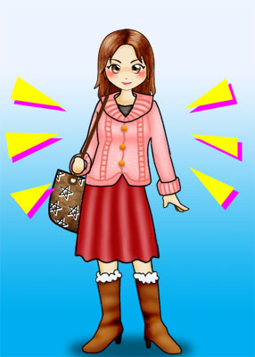
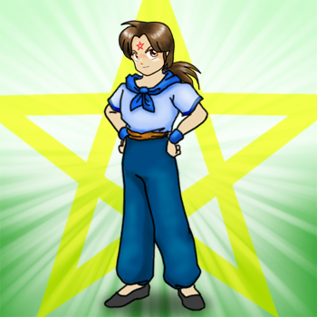

慎吾と出会った日から、３週間が過ぎていた。 あれから、慎吾には一度も会っていない。
それに、魔法クラブにも全く顔を出さない。 どうしたんだろう？・・・・
あの時、俺が慎吾に冷たくしたから、慎吾は俺の事を嫌いになったのかも？
なんて思ってしまう事もあった。 でも別に、それでも構わない。
だって俺は、いつか完全な男になるんだから、慎吾がどんなに俺を想おうとも、俺は慎吾とは一緒にはなれない。
だから俺は、慎吾の事を忘れる事にした。 この感情は、俺の女と男の両方の重なった部分の気持ちだった。
でも、心のどこかで、また慎吾に逢いたいと願う俺が居るのも事実だが・・・・
今の俺は、少しでも早く女装剤の解毒剤を、開発が出来るような立派な魔女になるため、一日の殆どを女の子として暮らしていた。
丸一日、女の子のまんま過ごす日もある。 なぜ女の子のまんま過ごす事が多くなったのかと言うと、
男の姿のときには、”男に変身する数珠”を着けているわけで、それはつまり ”魔女と魔力” を押さえる事になるので、
結果的に、魔女として成長する時間も無駄にしているのだと、母親から聞かされたからだ。
それはつまり、俺が男の姿で居る時間が長ければ長いほど、
俺が女装剤の解毒剤を開発できるほどの、立派な魔女になるのも遅くなるわけで、
その分、俺が完全な男になる日も、遅くなるってわけだ。
今じゃ、近所の人達の前に出るときだけ、男の姿で居るようにしている。
「時々来ている、あの女の子は誰？」なんて聞かれても困るし・・・・
でも、そんな時だった。 姉貴が、あの慎吾と密かに逢っていると言う噂を、近所の人から聞いたのだ。
その人は、俺の家から向かって、左斜め向かいに住む二十代後半の女性で、名前は ”渡 みゆき” という。
彼女は、高校時代に両親と死に別れ、今じゃ四つ上の兄との二人暮しだそうだ。
それ以上の詳しい話は知らないが、みゆきさんは俺にだって気軽に話しかけてくれて、
俺の事も名前で呼んでくれる様な、気さくでいつも明るい人だった。
身長は、１６０ｃｍにチョイ足りないくらい？ 二十代後半のにしては結構童顔で、ショート・ボブカットのとても可愛らしい女性だ。
今じゃ、互いに携帯の番号だって登録している。 母親や姉貴とも仲の良いご近所さんだ。
そして俺が、魔法クラブへと出掛けるときに、たまたま買い物から帰ってきた様子のみゆきさんに、声を掛けられた。
みゆき：
「 裕二君、こんばんわぁ〜」
裕二：
「 あ、みゆきさん、こんばんわ！」
みゆき：
「 今からお出掛け？」
裕二：
「 はい。 これから、まほ・・・・じゃない！ チョット知り合いの家に遊びに行くんです。」
みゆき：
「 へぇ〜そっかぁ〜」
裕二：
「 ・・・・ヒヤヒヤ」
危なかったぁ〜！ もう少しで、”魔法クラブ” って言ってしまいそうだった。
まぁ、この人になら魔法クラブについて知られても構わないかも？って思うのだが、あまり公表できるものではない。
もし、俺が魔女だとバレてしまうかも知れない可能性があると思うと、あまり余計な事を言わない方が良さそうだ。
ところが、そのみゆきさんから、思わぬ事を聞く事になる。
みゆき：
「 そう言えばさぁ、夏海ちゃん彼氏ができたのね？」
裕二：
「 えっ？ さぁ〜？ どうなのかなぁ？ 俺は姉貴のそんなところは良く知らないので・・・・」
みゆき：
「 そうなの？ 此間、駅前の喫茶店”ゆみ”で、結構カッコ良い男の人と仲良く話しているところを見たよ。」
裕二：
「 へぇ〜 そうなんですか？ ふぅ〜ん・・・・姉貴の奴、いつの間に・・・・」
俺は、姉貴のそんなところは全然知らなかったし、全く関心も無かった。
でも、その後みゆきさんから聞いた、姉貴と一緒に居た男の特徴を聞いて、ギクッとした。
みゆき：
「 ホント、カッコ良い人だったわよ！ クッキリした二重で鼻筋が通ってて、やい歯がチョット可愛い感じかも♪
星型のネックレスを着けていたのが、印象的ねぇ〜」
裕二：
「 ！・・・・ふぅ〜ん」
《慎吾！？ まさか・・・・なぁ？》
みゆき：
「 私、悪いとは思ったんだけど、二人が店から出てきたら話しかけてやろうと思って、喫茶店の外で待ってたのね。
でも、夏海ちゃんは店から出て来たのに、彼氏は出て来なかったのよ。
夏海ちゃんは、そのままどこかへ行っちゃったけど、彼氏はあのまま姿を見せなくなっちゃってね。」
裕二：
「 ！？・・・・へ・・・・へぇ〜そうなんですか。」
《おぃおぃ・・・・まさか、ホントに慎吾なのかも？》
みゆき：
「 その後で、私なんとなくその喫茶店に入ってみたの。 夏海ちゃんの彼氏をもっと良く見てみたくなってね。
でも、彼氏はどこにも居なかったのよねぇ〜 店から出て行った様子も無かったのに・・・・」
裕二：
「 ！！・・・・・・・・」
《まさか・・・・まさか、やっぱり慎吾なのかも？ 店の中で、転移魔法で姿を消したんじゃないのか！？》
みゆき：
「 うふふ♪ それより、今度は裕二君の番ね！」
裕二：
「 はい？ 何の事っすか？」
みゆき：
「 恋人よ！」
裕二：
「 んみゃぁ！？ か・・・・恋人って・・・・
みゆき：
「 裕二君、職を失っちゃって落ち込んでるみたいだけど、恋人が居ればきっと心の支えになるわ。」
裕二：
「 にゃはは！ いやぁ〜俺は・・・・まぁ・・・・うん。」
みゆき：
「 クスクスクス・・・・♪ ごめんね？ 大きなお世話だったかしらね。」
裕二：
「 いえ・・・・」
みゆき：
「 じゃぁね。」
裕二：
「 あ、はい。 失礼しますぅ〜」
みゆきさんは、そう言って自分の家へと入って行った。
あはは・・・・恋人かぁ。 でも、”恋人”だなんて変なふうに聞くなぁ？
そんな事言われてもなぁ。 そりゃ、俺だって恋人っていうか彼女が欲しいよ。
でも、今の俺の男の姿は仮の姿であって、本当は俺は魔女なんだ。
もし彼女を作るとしたなら、俺が完全な男に成ってからって事じゃないと・・・・
はぁ・・・・なんだか、気落ちしちゃったな。 魔法クラブへ出掛ける気が無くなっちゃったよ。
俺が完全な男になったら、愛さんに告白したいなぁ〜なんて思っていたけど、先ず無理だろうな。
だって愛さんは、女の子の俺を気を入っているわけで、男の俺なんかはただの仲間としか思っていないはずだし。
実は、みゆきさんも俺にとって憧れの人なんだよな。 今は彼氏が居ないみたいだし。 って、以前は居たのかなんて知らないけど。
すっごく優しい人だし、男のときの俺よりも背が低いし、年上だけどとても可愛い人だし・・・・
しかし、みゆきさんが言う、姉貴と一緒に居たって言う野郎が気になる。
特徴や喫茶店内で姿を消したところから、慎吾としか思えないのだ。
それに近頃、姉貴の帰りがいつもよりも遅い。 もしかして、慎吾と逢っているのかも知れない？
そう思うと、また俺の女の子の感情が浮き出てきて、慎吾が許せなくなってくるのだ。
裕二：
「 くそ！・・・・絶対、姉貴が逢っている奴とは、慎吾に違いない！
なんだ、慎吾の奴・・・・俺に、「君は僕のものだ」なんて言っておきながら、
今は姉貴と仲良くイチャイチャってかよ！？ ムカつく！
あぁ〜もぉ〜！ 今日は魔法クラブへ行くのはやめだ！！」
裕二は、自転車で魔法クラブへの道を途中まで走ったが、そう独り言を言って家へ戻ってしまった。
姉貴と慎吾との事が気になって、とても魔法クラブへ行く気にはなれなかった。
バタン！・・・・
伸江：
「 うん？ 裕二、出掛けたんじゃなかったの？」
裕二：
「 え？ あぁ、まぁ・・・・うん。」
母親は、出掛けたはずの俺が戻って来たものだから、キョトンとした顔をして俺に聞く。
俺が愛さんの事が好きで、愛さんに会いに行くのが魔法クラブへ行く理由の一つだと、母親は知っていたからだ。
裕二：
「 姉貴は、まだ帰ってないのか。」
伸江：
「 まだよ。 夏海に何か用でもあるの？」
裕二：
「 いや・・・・別に。」
トットットット・・・・
伸江：
「 ふぅん？」
俺は、そう言って自室へと戻った。
そしてベッドに体を投げ倒し、天井を眺めながら考えていた。
《慎吾の奴、いったい何を考えてやがる？ まさか、俺から姉貴に乗り換えたんじゃないだろうな？》
《母親が言うには、男性魔女には自惚れた奴が多いらしいから、慎吾の奴も結構浮気性なのかも？》
《なんだアイツ！ 俺に、「君は僕のものだ」とか、「僕と君は、結ばれる運命なんだ」なんて言っておきながら、》
《今じゃ俺に逢う事をせずに、密かに姉貴と逢っているなんて！》
そんな事を考えていると、裕二の体がぼんやりと光り始めた。
やがて裕二の体は、徐々に小さく、そして女の子の体へと戻ってゆく。
《ったく、なんなのよ慎吾のバカ！ 私が冷たくしたからって、姉貴に乗り換えるなんて！！》
《やっぱり私の事なんか、何とも思ってなかったんだ！ 結局、私の事じゃなく魔力にしか興味なかったんだ！》
いつの間にか、裕二の心の中での言葉さえも、女の子へと変わっていた。
裕二：
「 あぁ〜もぉ〜！ やぁ〜めたっ！！ 元々私だって、アイツの事なんか何とも・・・・思って・・・・ない・・・・・慎吾のバカ！」
もう完全に、裕二の思考は女の子になっていた。
そして、裕二の体も、完全に女の子に戻ってしまっていた。
裕二：
「 ・・・・！？ あれ！？ なんで？ なんで俺、女の子になってんだ！？ 数珠を着けているのに！」
そう。 ”男の姿に変身する数珠” を、右手に着けているはずなのに、裕二の体は女の子に成っている。
これは、何を意味するのか？ 裕二は困惑する。
男の姿に変身する数珠の効果が無くなる原因は、濡らした場合と汚した場合。
そして、壊れてしまった場合だった。 でも、もし壊れてしまったら、二度と男には変身出来ない事を意味する。
裕二：
「 はっ！ まさか！？ まさか、男に変身する数珠が、とうとう壊れてしまったんじゃ？！ たっ・・・・大変だっ！！」
ダダダダダダッ！！
裕二は、慌てて一階のリビングへ駆け下りた。
男に変身する数珠を着けているのに、自分の体が女の子に戻ってしまった原因を、母親に聞くために。
ダダダダダダ！！
裕二：
「 母さん！ 母さぁ〜ん！！」
伸江：
「 なによ、煩いわね〜！ 女の子がそんなはしたなく、バタバタするもんじゃありません！」
裕二：
「 そんな事言ってる場合じゃないよ！！ 数珠が！！ 俺の数珠がぁ〜！！」
伸江：
「 はぁ〜？ 何を慌ててるの？」
裕二：
「 数珠が・・・・」
伸江：
「 数珠ぅ？」
裕二は、数珠を着けているのに、体が女の子に戻ってしまった事を説明した。
すると母親は、その原因について幾つか話してくれた。
１．男に変身する数珠の効果は、汚したり濡らしたり壊したりすると無になる。
２・月経が始まると、体が女性としての性機能の処理を行うべき時期だから、魔力では押さえ切れない。
３・思考が女性として強く出てしまうと、魔力では女性を押さえ切れなくなり、変身が解けてしまう。
４・男に変身する数珠の魔力を上回る魔力を浴びてしまうと、数珠の魔力が中和されて効果が無になる。
５・自分の持つ魔力が、男に変身する数珠の魔力を上回ると、変身できなくなる。
だった・・・・。
そして、裕二が女の子に戻ってしまった時の状況を良く思い出してみると、
母さんが教えてくれた原因の内で、３番が一番可能性が強いと思った。
裕二は、恥かしげに母親に話した。
伸江：
「 良く考えてみて！ 裕二が一番近いと思う原因はどれか・・・・」
裕二：
「 ・・・・さ、３番かな？」
伸江：
「 そぉ・・・・やっぱり。 いつか、こんな事になるかもって思っていたけど。」
裕二：
「 ぇえっ！？ そんな・・・・じゃぁ、やっぱり俺はもう、男には変身出来ないって言うのか！？」
伸江：
「 大丈夫よ！ 一度数珠を外して私に貸しなさい！
私が魔力を注いで数珠のパワーを上げてあげるから。 そしたらまた、男に変身出来ると思うわ。」
裕二：
「 ほっ・・・・♪ 良かったぁ〜このまま男に変身出来なくなったら、どうしようかと思った。」
伸江：
「 でも、次の満月まで待っててね。」
裕二：
「 ふぇ？・・・・なんで？？？」
伸江：
「 実はね・・・・」
裕二は、数珠を右手から抜き取り、母親に手渡した。
でも、今の母親の魔力では、幾ら数珠に魔力を注いでも効果は変わらないらしい。
なぜなら、今の裕二の思考が女性に偏り過ぎているため、今の数珠の魔力よりも強い魔力を注がないと、
今の裕二の女性の部分を押さえられないので、体を男には変身させられないらしいのだ。
母親が言うには、今の裕二の思考は、６：４で僅かに女性としての思考が上回っているのだと言う。
裕二自身には、それほど感じられないが・・・・
そう言うわけで、今の母親の魔力を上回る魔力を、数珠に注がなければならないため、
満月の夜に、今の魔力を上回る方法で、数珠に魔力を注ぐ必要があるので、次の満月まで待って欲しいと言うのだ。
裕二：
「 ・・・・って、おいおい！！ 嘘だろぉ〜！？ つい此間、満月を過ぎたばかりなのに！！」
伸江：
「 だって、しょうがないじゃない！ 今では、その方法しか無いんだもん。」
裕二：
「 えぇ〜〜〜〜！？ そんなぁ〜！！ それじゃ、俺は１ヶ月近くも女のまんまで居ろって言うのかよ？！」
伸江：
「 そう言う事になるわね。（キッパリ）」
裕二：
「 がぁ〜〜〜〜ん！！」
裕二は、母親の顔を見つめたまんま、兎座りにへたり込んだ。
でも母親を見ると、俺が女の子のまんまで居る事を、喜んでいるように見えるんだけど・・・・。
伸江：
「 いいじゃない！ この際だから、アンタを立派な女の子として調教してあげましょうか？」
裕二：
「 んみゃぁ？！ ムチャクチャ言うなよぉ！！ 俺は、いつか完全な男に戻るんだからな！！
それにだいたい、調教とはなんだ！ 調教とわぁ！！」
伸江：
「 でも、前にも言ったけど、チャンと魔女として、女の子として自覚しないと！
じゃないと、女装剤の解毒剤を作れるほどの魔女になるのが、その分時間がかかるのよ？」
裕二：
「 解かってるよ！ でも、そんな簡単なもんじゃないだろう？！」
伸江：
「 そぉ？ 勿体無いなぁ〜」
裕二：
「 なにがぁ？！」
母親は、兎座りで座り込む俺の頭をなでながら言う。 俺は、お子ちゃまじゃねぇーっつぅ〜のっ！！
そんな話をしていると、姉の夏海が帰って来て・・・・
カチャ！・・・・
夏海：
「 ただいまぁ〜」
裕二と伸江：
「 ！」
パタン！
伸江：
「 お帰りなさい。」
裕二：
ギロッ！・・・・
裕二は、夏海に向かって睨みつけていた。
だって、夏海が慎吾と逢っていると言う話を聞いて、その所為で、今の自分がこんな状況で居るんだと思うからだった。
そして、夏海が慎吾と逢ってニコニコと笑顔で会話しているところを想像すると、夏海への嫉妬心がうまれる。
夏海：
「 そんなとこに座り込んで、何やってんのアンタ？」
裕二：
「 ふん！ なんでもないよ！」
夏海：
「 ふぅん？・・・・あっそ。 何でもいいけど、邪魔だからそこをどいてよ！」
裕二：
「 ・・・・。」
裕二は、夏海を睨みならが、やる気が無いかの様に、のそのそと立ち上がり、母親の横に並んだ。
夏海は、自分を睨む裕二を怪訝な表情で見ながら、二階への階段を上がって行った。
《姉貴の奴、俺から慎吾を横取りしやがって！ 慎吾は最初は、俺に気があったんだからな！》
《慎吾も慎吾だ！ 俺が優しくしないからって、よりによって姉貴なんかとくっ付くなんて！》
《姉貴の事、タイプじゃないって言っていたくせに！ 慎吾のバカ！ うそつき！》
裕二は、そんな事を思いながら、階段を登る夏海の背中を見詰めていた。
すると母親は、夏海を睨む裕二を見てピンときたのか、裕二に尋ねる。
伸江：
「 裕二、夏海と何かあったの？」
裕二：
「 へっ！？・・・・う、うぅん！ 何にもないよ。」
伸江：
「 ・・・・そぉ？ まぁ、あんまり喧嘩ばかりしてないで、仲良くするのよ？」
裕二：
「 なんだよ、急に・・・・姉貴が俺に突っかかって来ないのなら、俺だって・・・・」
伸江：
「 夏海の事もそうだけど、ほら、他の人達ともね。」
裕二：
「 はぁ！？ いったい、誰の事を言ってんだよ？」
伸江：
「 ま、そう言うことよ！ じゃぁお母さん、お風呂に入る時間まで寝るから。」
裕二：
「 ・・・・？」
母親は、そう言って自分の寝床へと向かった。
実は母親は、慎吾がこの外界へ来ている事を、随分と前から知っていたのだ。
それを知ったのは、裕二が初めて慎吾に出会った日だった。
自分よりも更に強力な魔力を発する者が、家の玄関前にまで来れば気付かないはずがなかった。
そして、慎吾が裕二に接触している事にも気付いていた。 更に、夏海に接触している事にも。
なぜなら、夏海から慎吾の魔力を感じていたのだ。 きっと、慎吾が作った魔導具を、夏海が持っているからだ。
何のために慎吾に接触し、慎吾から魔導具を受け取ったのかまでは解からないが・・・・。
結局裕二は、この日は魔法クラブへは出掛けなかった。
愛さんから携帯が鳴ったが、適当に理由を言って断っていた。
本当は、愛さんに逢いたかったのだが、今は慎吾と夏海との関係が気になり、それどころではなかった。
裕二は、風呂に入ってから、また自室へ篭った。
すると間もなく、夏海が裕二の部屋へやってきた。 何かを持って。。。。
コンコンコン！
夏海：
「 裕二〜起きてる？」
裕二：
「 ！・・・・あぁ。」
夏海：
「 入るわよ。」
カチャ！・・・・パタン！
裕二：
「 ・・・・なんだよ？」
夏海：
「 うふふ♪」
裕二：
「 ・・・・？」
夏海は、左腕を後ろに回して部屋に入ってきた。 明らかに、何かを持っている様子。
すると夏海は、スッと左手を裕二の前に差し出した。
夏海：
「 コレ、アンタにあげる。」
裕二：
「 あん？・・・・なにソレ？」
夏海：
「 飴よ。 美味しそうだったから、アンタにも一個あげようと思って。」
裕二：
「 はぁ？ どう言う風の吹き回しだぁ？ そんな事、今まで一度も無かったのに・・・・」
夏海：
「 別にいいじゃん！ ほら、あげるって言ってんだから食べなさいよ。 美味しいわよ。」
裕二：
「 ・・・・ふぅん。」
姉貴が俺に差し出したのは、何の変哲も無い飴玉だった。
赤い色をした直径３ｃｍほどの大きさの飴玉で、どこにでも売っているような物だった。
そんな物を、わざわざ俺に渡すために来たのか？ 本当は別に何か用があったんじゃないのか？
俺は、姉貴から飴玉を受け取り、みゆきさんから聞いた話を、ストレートに聞いてみた。
慎吾らしき男と、”喫茶ゆみ” で密かに逢っていた事を。
裕二：
「 そう言えばさぁ、姉貴って彼氏が出来たんだってな？」
夏海：
「 はぁ〜？ 彼氏ぃ〜！？ 居ないわよ、そんな人。」
裕二：
「 嘘なんてつかなくても、いいじゃねぇーか？ 彼氏が出来た事を、別に隠す事もないだろう？」
夏海：
「 ホントに、居ないわよ！ なんで急に、そんな話になるわけ？」
裕二：
「 だって、みゆきさんから聞いたんだよ。」
夏海：
「 みゆきさん？」
裕二：
「 あぁ。 此間、 ”喫茶ゆみ” で男と二人で楽しそうに話しているのを見たって言っていたんだよ。」
夏海：
「 ！！・・・・あぁ〜！ あの人は、別に彼氏なんかじゃないわよ。」
裕二：
「 へぇ・・・・じゃぁ、何なんだよソイツ。」
夏海：
「 別に、誰だっていいでしょう？ アンタに私のプライベートにまで触れられたくないわよ！」
裕二：
「 へぇ〜そうかい？ 何だか怪しいけどなぁ〜？」
夏海：
「 ふん！ 勝手にそう思っておけば？ 私とあの人とは、そんな関係じゃないんだから。
それにだいいち、私の好みじゃないもの。 私のタイプと言えば、もっとワイルドで危険な感じのする・・・・」
裕二：
「 あれ？ そうなのか？」
夏海：
「 って、私の事なんてどうでもいいでしょ！？」
裕二：
「 ・・・・ まぁ、そうだけどさ。」
なんだか、ほっとした。
今の姉貴の様子からだと、本当に慎吾の事は何とも思っていないようだ。
でも何で、慎吾と逢っていたのだろうか？ いやもしかしたら、
姉貴が逢っていた相手を、俺が勝手に慎吾だと思い込んでいるだけなのかも？
そう思うようになると、急に姉貴を疑った自分がバカに思えてきて、姉貴に対して申し訳なく感じた。
でも、姉貴の好きなタイプって、ワイルドで危険な感じな野郎だったのかぁ〜ぷぷぷ♪
姉貴らしいっちゃ〜姉貴らしい。 でも、筋肉モリモリの男なんて気持ち悪いと俺は思うけどなぁ〜
俺なら、爽やかで笑顔が可愛らしい感じの・・・・そう、慎吾の様な・・・・
っておいっ！ また慎吾の顔が俺の頭の中に浮かび上がっちゃったよぉ〜 いかんいかん！
俺は、ほっとしたせいか、何も考えずに姉貴から貰った飴玉を、口の中に放り込んだ。
裕二：
「 カプッ！・・・・ふぅん。 らからか・・・・旨いららいか？」
（なかなか・・・・旨いじゃないか？）
カリッ・・・・コリッ・・・・
夏海：
「 ふふふ♪ そぉ？ 実はその飴玉、さっきアンタが言っていた人から貰ったのよ。」
裕二：
「 ほぉ〜らろかぁ？」
（そーなのか？）
夏海：
「 クスクスクス♪」
今俺が食べている飴玉は、喫茶店で姉貴と一緒に居た男から貰ったと言う。
わざわざ飴玉を貰うために、喫茶店で逢っていたなんて思えないし、少し気にはなったけど、今はどうでもいい事。
俺は気にせずに、飴玉の甘い味を堪能していた。
俺は、口の中に飴玉を含んだまんま喋るから、舌足らずの様な喋り方になる。
そんな俺の様子が可笑しかったのか、姉貴はクスクスと笑ってやがった。
でも、姉貴は何を思ったのか、俺が脱ぎ捨てたジーンズのベルトを抜き取り、二つに折り曲げて俺の背後に回る。
裕二：
「 あん？ らりおやっれんら？ そんらろろもっれ？」
（あん？ 何をやってんだ？ そんな物持って？）
夏海：
「 ふふふ♪ もう、そろそろね！」
裕二：
「 あん？ らぃらぁ？・・・・あれ？ 何だコレ？！ 飴が急に消えちゃったぞ！！」
（あん？ 何が？）
夏海：
「 ニッ♪・・・・」
裕二：
「 ！？・・・・」
何だコレは？ さっきまで俺の口の中にあった飴玉が、突然消えてしまったのだ。
別に飲み込んだわけでもないし、こんなに早く解けてしまうはずもない。
それを姉貴に聞いたとき、姉貴はニヤッといやらしい笑みを浮かべて、ベルトを持って構えたのだ。
そして、猫の様な変な鳴き声を言って・・・・
夏海：
「 みゃぁ〜ごぉ！」
裕二：
「 はぁ？ 何を言って・・・・」
バチィ〜ン！
裕二：
「 いだぁ〜〜い！！」
姉貴は、突然俺の尻をベルトで引っ叩いたのだ。
コレは、半端じゃなく痛い！ この上なく痛い！ メチャクチャ痛い！ 漏らしてしまいそうなくらい痛い！！
あまりの激痛に、俺は尻を押さえながら、ピョンピョン飛び跳ねて痛みに耐えていた。
夏海：
「 あははははは！ 上手くいったぁ〜♪」
裕二：
「 ってこらぁ！！ 何の真似だこりゃ！？」
夏海：
「 実はその飴玉はね、魔導具なのよ！」
裕二：
「 まどうぐぅ！？ なん、何の魔導具だ！？ 俺になんの魔法をかけたぁ！？」
やられた！・・・・また姉貴に変な魔法をかけられてしまった。
以前にかけられた魔法の様に、俺の体が動かせなくなるわけじゃないようだが、
その効果が分からない分、メチャクチャ不安になる。
それに、姉貴が喫茶店で逢っていた男から貰ったって言うから、やっぱり相手は慎吾だと俺は確信した。
・・・・と、言う事は、俺が食べてしまった魔導具とは、慎吾が作ったものなのか？
夏海：
「 その魔導具はね、アンタが女性らしく振舞い、女性らしく話すことが出来るようになる魔導具なのよ。」
裕二：
「 はぁ？！・・・・・・・・・・・・・・・・別に、変わった様子はないようだけど？」
確かに変わった様子は無いと感じた。 今俺は、特に女性として振舞っているわけでもないし、話し方も普段通りだ。
これのどこが、女性らしく振舞い、女性らしく話す事が出来ていると言うのだろうか？
だが、この後すぐ、その効果を理解する事になる。
裕二：
「 おいっ！ 何だったんだ？ 何にも変わってないじゃないか？」
夏海：
「 みゃぁ〜ごぉ！」
裕二：
「 みゃぁ？」
ズキィ〜ン！
裕二：
「 いだぁあぁ〜！！」
姉貴が、さっきのように猫のような変な鳴き声を発したかと思ったら、突然俺の尻に激痛が走った！
その感覚は、さっき姉貴が俺の尻をベルトで引っ叩いた時と、同じ場所で同じ感覚だった。
夏海：
「 あははははは！！ おもしろぉ〜い♪」
裕二：
「 痛い・・・痛い・・・・っておいっ！ 今何をした！？」
夏海：
「 みゃぁ〜ごぉ！」
ズキィイィ〜〜ン！！
裕二：
「 あだぁあぁ〜〜！！！」
夏海：
「 あはははははは！！ ホント、よく効く魔導具ねぇ〜♪」
裕二：
「 何なんだよコレは！？」
夏海：
「 ふふふふ♪ 本当はね、アンタの食べた飴玉は、とても高度な魔法をかける魔導具なのよ。」
裕二：
「 だから、なにっ！？」
夏海：
「 アンタが食べた飴が消えたとき、一番最初に私が喋った言葉が合言葉になって、
その時に一番最初にアンタが感じた感覚が、また再現できるって言う魔導具なのよ！」
裕二：
「 なんだソレ？！」
夏海：
「 本当は、アンタが女性らしく振舞えるって言う魔導具じゃなくって、アンタが女性らしくしないときに、
アタシがさっきの猫の鳴き声を言って、アンタを戒めるって言う魔導具なの！」
裕二：
「 なにぃ〜！？」
夏海：
「 つまり、アンタにかけた魔法は、嫌でも女性らしく振舞わなければならなくなるっていう魔法ってわけね！」
裕二：
「 いやだぁ〜〜！！」
また姉貴にやられてしまった・・・・。 でも今回は、姉貴だけじゃなく慎吾も関わっている。
いったい姉貴と慎吾とで、何を企んでいるって言うんだ？
でも、慎吾が俺に、女性として振舞えるようにする魔導具を姉貴に託したって事は、
慎吾は今でも、俺に好意を持っているって事なのか？
俺が女性として成り切れるように、つまりは魔女として成り切れるように考えての事だったのか？
そう思うと、また慎吾への想いが蘇ってきた。 慎吾に逢いたい。 慎吾と話したいと想う自分が居る。
でも、男だった俺のもう一つの思考が、それを阻むかの様に俺の女の子の思考を隠そうとする。
夏海：
「 さぁ、慎吾さんの希望も叶えてあげたし、そのお礼に慎吾さんが私の欲しかった車も買ってくれるって言うし、
裕二も、女の子として自覚出来るようにもなれるし、言う事なし！ めでたしめでたしってわけね♪」
裕二：
「 どこが、めでたいもんか！！
やっぱり慎吾に逢っていたんだな！？ そんな交換条件なんかで俺を陥れやがって！！」
夏海：
「 あら、そんな言い方は心外だわねぇ。 私と慎吾さんは、アンタのためを思って世話を焼いてあげているんじゃない。
だから慎吾さんも、私が注文した魔導具を作ってくれたのよ。」
裕二：
「 何が俺のためだよ！！ こんな変な物を慎吾に作らせやがって！」
夏海：
「 でも慎吾さん、私が注文した魔導具を、なかなか作ってくれなかったけどね。
最初、慎吾さんが作りたかった魔導具は、アンタが女性らしくしなかったとき、
男に変身する数珠の効果が、その日１日だけ無効になるって物だったらしいけど、
裕二を躾けるには、そんな生易しいものじゃダメって、教えてあげたのよ。」
裕二：
「 んなっ！？」
夏海：
「 もっと、厳しく躾けないと、裕二は女性として自覚しないからってね。」
裕二：
「 んぐぐ・・・・また勝手に決めやがって！！ 慎吾に会わせろ！ 今、どこに居るんだ！？」
夏海：
「 そんな事、私は知らないわよぉ〜」
裕二：
「 なに！？ じゃぁ、なんで・・・・」
夏海：
「 だって喫茶店で友達と待ち合わせしているとき、初めて慎吾さんに会ったんだもん。
最初はナンパ？って思って無視していたけど、裕二を知っているって言うから、話を聞いてみたのよ。
その時、元々慎吾さんは母さんのフィアンセだった事も、自分が男性魔女だって事も教えてくれたわ。
そして裕二が自分のパートナーとして決まった事も教えてくれた。
そこで、私に頼みがあるって言うから聞いてあげたってわけなのよ。
裕二を女性として自覚できるような魔導具を作るから、それを渡して欲しいってね。
その代わり、私が欲しかった車を買ってもらうって条件でね♪」
裕二：
「 なんだよソレ？！ よくそんな条件で、慎吾も姉貴に託したもんだな？
車なんて、そう簡単に買えるもんじゃないだろう？」
夏海：
「 あの人の事なんて、どうでもいいのよ！ 私は私自身に利益があると思ったから頼まれてあげたの！
あの人がどうなろうと、私の知った事じゃないわ！」
裕二：
「 ！？・・・・恐ろしい奴だな姉貴って・・・・
夏海：
「 ふん！」
ホント、そう思った。
自分の利のためなら、他人がどうなろうと知った事じゃないと言い切る姉貴。
この後、姉貴が偉大な魔女に成ったと考えると、この世は終わりかも？ なんて思った。
俺は、改めて姉貴の恐ろしさを思い知らされた。
それより、困った事になった。 姉貴が側に居ると、いつ戒めの魔法を発動させられるか分からない。
出来るだけ、姉貴とは一緒に居ない方が良いと思うのだが・・・・
でも慎吾の奴、この世界（人間界）ではどんな仕事をしているのだろう？
姉貴に、アッサリと車を買ってやると約束したくらいだから、かなり金になる仕事をしているはずだと思った。
俺、慎吾に雇ってもらおうかなぁ〜？ いやでも、慎吾の彼女になれば、そんな事をしなくても・・・・
って、そうじゃないって！！
夏海：
「 ってわけで、裕二！ 今からアンタの女性としてのレッスンを始めるわよ！」
裕二：
「 なに！？ 何をさせる気だ？！」
夏海：
「 そうねぇ〜先ずはやっぱり、チャンと意識して女の子らしく話すようにしましょ♪」
裕二：
「 はぁ！？ そんな事出来るかよ！！ 今でも不意に女っぽい言葉が出てしまって精神が壊れてしまいそうなのに、
そんな事意識しながら喋っていたら、それこそ俺の精神は壊れてしまうっ！！」
夏海：
「 簡単！簡単！ 今の魔法を使えば、アンタは嫌でも女の子の言葉遣いをしたいって、思うようになるからね♪」
裕二：
「 今の魔法？・・・・あっ！！ チョット待てっ！ それだけは勘弁してくれ！！」
夏海：
「 ダメでしょ！ そんな言葉遣いじゃ！！」
裕二：
「 はぁ？」
夏海：
「 だからさっきも言ったように、アンタが女性らしく話すレッスンは始まっているのよ！ ほら、もう一度！」
裕二：
「 え？・・・・何を？」
夏海：
「 みゃぁ〜ごぉ！」
ズキィイィ〜〜ン！
裕二：
「 いだぁあぁあぁ〜〜〜〜！！」
夏海：
「 ほら、解かったでしょ？ もう一度やり直し！」
裕二：
「 痛い・・・・痛い・・・・すんすん だから、何がやり直しなんだよぉ〜？」
夏海：
「 今のアンタが喋っている言葉遣いが、女の子らしくないって言ってんの！！ ほら、女の子の言葉！」
裕二：
「 そんな急に言われたって、出来るわけが・・・・」
夏海：
「 みゃぁ〜ごぉ！」
ズキキィ〜ン！
裕二：
「 んぎゃはぁ！！ 痛い・・・・痛いよぉ〜ほほほぉ〜〜〜
俺はもう、あまりの激痛に我慢が出来なくて、上半身をベッドに伏せて、お尻を両手で摩っていた。
なんで俺がこんな目に遭わなければならないんだぁ〜！？
慎吾のバカぁ〜！！ 姉貴のバカぁ〜〜！！
・・・・こんな事を言うと、また戒めの魔法を発動させられると思ったので、口には出さなかったが。
そしてそのまま、俺の女性としての言葉遣いのレッスンは続いた。
チョット女性らしくない事を言えば、すぐに「みゃぁ〜ごぉ！ ズキィ〜ン！」だから堪ったもんじゃない。
でも実際に叩かれているわけじゃなく、痛みだけの再現なので、しばらくすれば痛みなんて消えるのだが・・・・
休憩する時と言えば、トイレに行くときだけだった。 チョット厳しすぎるんじゃないの！？
でも、朝方にもなると、俺は女性としての言葉遣いを何とか出来るようになっていた。
と言っても、たとえ姉貴の前であっても、意識して女性の普通の？言葉遣いなんて恥ずかしくて出来ないので、
わざとチョット崩して、話すようになっていた。 だってこの方が、幾分か恥ずかしさが紛れるから・・・・
夏海：
「 ・・・・・・・・まぁ、昨夜よりはマシにはなったけど。 なんかねぇ・・・・その言葉遣いって・・・・」
裕二：
「 何がで御座いますかぁ？」
夏海：
「 ・・・・アンタまさか、ふざけてるわけじゃないでしょうねぇ？」
裕二：
「 わたくしが、ふざけてるぅ？ そんなあんまりで御座いますぅわぁ！ わたくしはこれでも必死に・・・・」
夏海：
「 あぁ〜〜〜もぉ〜〜〜〜分かった分かったぁ！ まぁ、裕二にしてみれば上出来なのかもね？」
裕二：
「 本当で御座いますかぁ？ どうも、有難うで御座いますで御座いますぅ〜♪」
夏海：
「 ・・・・・・・・
夏海は、チョット失敗したかも？・・・・って思っていた。
もしかしたら、裕二に女性としての言葉遣いを強要させたのは、まだ早過ぎたのかも？と・・・・
でも、もし今の状態から無理やり直せと言ったら、今よりももっと崩れてしまいそうで、とても出来なかった。
だからと言って、裕二が女性らしく話し振舞えるようにするのを、諦めるわけにはいかない！
これは慎吾との交換条件であり、もしそうしなかったら慎吾から車を買ってもらえないからだ。
夏海は、欲しい車を獲得するため、らしくない程に熱心に裕二を女性として？躾けていた。
夏海：
「 ふぅ・・・・まぁ、いいわ。 今回は、これくらいにしておきましょう。 じゃぁ私はもう寝るから。」
裕二：
「 はい？ 寝るって仰いますけど、もう朝で御座いますぅわぁ。 お姉さまは、お仕事に行く時間ではないんですぅのぉ？」
夏海：
「 お姉さま・・・・か。 アンタにお姉さまなんて呼ばれるなんて、思いもしなかったわ。
仕事ねぇ、もう辞めちゃったわ。」
裕二：
「 ぇえっ！？」
なんと夏海は、配管工の仕事を辞めてしまったと言う。
仕事を辞めてしまったら、収入が無くなるのに、いったいどうするつもりなんだろう？
でもこの後、夏海から聞いた内容に、裕二は目が点になった。
裕二：
「 ど、どうしてですぅのぉ！？ 仕事を辞めちゃったら収入が・・・・」
夏海：
「 だって、私は魔女なのよ？ 魔女は仕事なんてしなくても、この世界で生きてゆけるもの。」
裕二：
「 そ、そうかも知れないけど・・・・でも・・・・」
夏海：
「 食事だって、母さんが魔法で作った裏の畑で採れる物から作ってるし、
お肉だって畑で採れた野菜を、魔法でお肉そっくりに作り変えているんだもん。
だから、全然お金なんてかからないし、電気だって、魔法での自家発電だから、殆ど電気代なんて要らないし、
しいてお金が必要なものと言えば、水道代くらいかしらね？」
裕二：
「 ・・・・
夏海：
「 もしその他に、お金が必要な事があれば、父さんが働いてくれているんだから何の問題も無いんだもん。」
裕二：
「 ぇえ〜！？」
夏海：
「 父さんって、働いていた私なんかよりも、結構お給料もらってるから。」
裕二：
「 んなっ！？・・・・まさか、全部お父様に払わせるおもつりで御座いますかぁ！？」
なんとまぁ・・・・ホント、姉貴って鬼だよなまったく・・・・
じゃぁ、税金とかは？ 保険代は？ それもみんな、親父が負担する事になるのか？
裕二：
「 でも、仕事を辞めたとしても、住民税は払わなければならないのでは？
それに、車の税金だってあるし、車検代とか他にも色々とあるはずですぅわ！
それ・・・・どうするおつもりなんで御座いますかぁ？」
夏海：
「 父さんが、払ってくれるんだって♪」
裕二：
「 はぁい！？」
夏海：
「 だって、私は収入が無くなるんだから払えるわけないじゃん！ 今は父さんの扶養家族なんだもん」
裕二：
「 ・・・・じゃぁ、健康保険なんかは？ それも？」
夏海：
「 うん！ バッチシよ♪」
裕二：
「 なんだか、お父様がかわいそう・・・・」
夏海：
「 いいのよ！ 父さんだって、承知のうえなんだから。
いつまでも若くて美人な母さんと、ずっと一緒に居られるだけで、幸せなんだってさ。」
裕二：
「 ！？・・・・やっぱり、お姉さまって怖い人で御座いますぅわぁ・・・・」
夏海：
「 あれ？ 今頃、気付いたの？」
裕二：
「 ・・・・・・・・・・・・・・・・
まぁ、本人が言うように、姉貴が自分を中心に考える事など、今に始まった事ではないが・・・・
しかし、親父が哀れで仕方が無かった。 でも人の幸せなんて、人それぞれ違うだろうし、
他人が何と言おうとも、本人が幸せと感じるなら、それはそれでいいのかも？
そして姉貴は、自分の部屋へ戻り、朝から眠る事になった。
俺も流石に眠くなったので、このままベッドに潜り込み、眠る事にした。
が、俺の携帯が鳴った。 いったい誰だ？ こんな朝早くから・・・・
机の上に置いてある携帯を手に持ちディスプレイを見て、俺は一瞬笑みがこぼれた。
電話の相手は、慎吾だったのだ。
でも、着信ボタンを押そうと思ったけど、考え込んで指が止まった。
姉貴にかけられた魔法は、元々は慎吾が作ったものだ。 それを思うと、急に慎吾が憎たらしく思えてきた。
でも、文句の一つも言ってやりたいので、電話に出る事にした。
ツンツンツン〜ツンツクツク〜♪
ピッ！
慎吾：
「 やぁ、久しぶりだね。」
裕二：
「 なによ？・・・・なんだよ？ 俺に何か用か？」
俺は、慎吾と話せると思うと、自然に女の子っぽい喋り方が出てしまうが、ぐっと堪えて、わざと男の言葉遣いに直して話した。
慎吾が俺に、女性らしくなるために魔導具を開発していたと知った俺は、今も慎吾が俺に気があるという事だと知り、
正直、とても嬉しく思ったのだが、その反面、慎吾に対して憎たらしくも思っていた。
だって、姉貴の言う通りに変な魔導具を作って、姉貴を通して俺に魔法をかけた張本人だからだ。
慎吾：
「 君が探している、ヘルマフロディストの泉の水を見付けたんだ！」
裕二：
「 え？」
慎吾：
「 この水は、貴重だからね。 普通に探してたんじゃ、見付かるものじゃないんだよ。
世界中を駆け回って、やっと見付けたんだ。 君に早く立派な魔女になってもらいたいからね。
それに、少しでも君の喜ぶ顔が見たいから。」
裕二：
「 ・・・・・・・・」
俺は、慎吾が世界中を駆け回って、俺のためにヘルマフロディストの水を探してくれていた事を知り、
慎吾が本気で俺の事を考えてくれている事に気付き、今すぐ慎吾に逢いたいと思った。
あのとき、慎吾が持ってきてくれた、ヘンルーダとイヌハッカも、実は今も家の裏の倉庫に大切に保管している。
俺が蹴飛ばしてバラバラにしてしまったはずの、ヘンルーダとイヌハッカは、
次の日の朝確認したとき、玄関前に綺麗に袋に入れられ置かれていた。 慎吾が片付けてくれたようだった。
慎吾が、俺に好意を持っているのは事実のようだ。 それに、俺に女性らしく成って欲しいと思っているのも。
自然と涙が溢れてきた。 嬉しかった。 慎吾は俺の事を嫌いになんかなっていなかった。
それどころか、今まで女装剤の材料を探しに旅に出ていた事も知り、慎吾への想いが一層深くなった。
このとき、俺の男の感情は、完全に女の子の感情に押されて、出ては来なかった。
慎吾：
「 今から、逢えないかな？」
裕二：
「 ・・・・・・・・」
慎吾：
「 もしかして、まだ怒ってるのかい？」
裕二：
「 う、うぅん！ 怒ってなんか・・・・」
慎吾：
「 そうか！ じゃぁ、逢ってくれるよね？」
裕二：
「 ・・・・うん。 今、どこに居るの？」
慎吾：
「 例の魔導具店があった場所に居るんだ。 来てくれるだろう？」
裕二：
「 うん。 分かった。」
慎吾：
「 そうか、じゃぁ待ってるよ。」
ブツ・・・・
裕二：
「 ・・・・・・・・慎吾」

裕二は、携帯を両手で持って自分の頬に当て、慎吾への想いを募らせていた。
嬉しくて、ジィ〜ンとくるものがあった。 今すぐ慎吾に逢うために飛び出したい気分だった。
でも、こんな格好じゃダメ！ 男のときから着ているラングラシャツにジーンズ姿じゃ。
そこで、愛さんが見立てて、自分のために買ってくれた服に着替えた。
ピンク色のカーディガンに、チョット大人しい目に？赤いプリーツスカートを穿いた。
携帯と財布とハンカチとティッシュを入れた、チョット大き目のバッグを持って。
普段なら、こんな格好なんて恥ずかしくて出来ないのに、今は自然と着こなしている。
裕二の部屋には姿見が無いので、一階に下りて洗面台の鏡で自分の姿を見る。
ヘアスタイルも、おかしい所が無いかと、正面から見たり、斜めを向いて見たりしてチェックした。
お化粧は、流石にまだ出来ないので、薄いピンクのリップだけ、何度も失敗しながらも唇に引いた。
額の赤い五芒星を隠すために、ファンデーションをチョット、パフパフと・・・・
そして自分なりにＯＫが出ると、茶色のブーツを履いて、ウキウキ気分で玄関のドアを開けた。
カチャ！・・・・
伸江：
「 あら、お出掛け？」
裕二：
「 えっ？ あ、うん。 チョットね。」
伸江：
「 そう。 あまり遅くならないようにね。」
裕二：
「 うん、分かってる。 えっと・・・・これ、変じゃないかなぁ？」
伸江：
「 うぅん！ すっごく似合ってるわ。 とっても可愛いわよ♪」
裕二：
「 そぉ？ えへへ♪ じゃぁ、行って来ます。」
伸江：
「 はぁい！ 気をつけてね。」
裕二：
「 うん！」
・・・・パタン！
裕二は、「可愛い」と言われて嬉しかった。 今までなら、「カッコいい」と言われた方が嬉しかったけど・・・・
裕二は、歩いて慎吾の待つ場所へと向かった。
すると、みゆきさんの家の前に差し掛かったとき、丁度みゆきさんも出掛けるところだったみたいで、声を掛けられた。
みゆき：
「 あら裕二君、朝からお出掛け？」
裕二：
「 はい！ チョット・・・・」
みゆき：
「 そぉ？ ふふふ♪ なんだか嬉しそうね？ もしかして、デート？」
裕二：
「 えっ？！・・・・いえ、あの・・・・
みゆき：
「 あらら・・・・真っ赤になっちゃって〜 図星みたいね。 うふふ♪」
裕二：
「 そんな・・・・
みゆき：
「 あははっ！ ごめんね。 別に冷やかすつもりは無かったんだけどね。
じゃぁ、行ってらっしゃい！」
裕二：
「 あ、はい。 行ってきます。」
みゆき：
「 じゃぁね。」
裕二：
「 はい。」
俺は、みゆきさんにそう言われて、すっごく照れ臭かった。
俺が、慎吾に逢いに行くのが嬉しくて、ウキウキ気分だったのが顔に出ていたのだろう。
でも、次の瞬間、俺は凍りついた！
《ぁあっ！ なんで？！ 私、今は女の子。 なのに、なんでみゆきさんは、私が裕二だって分かったの！？》
俺は、歩きかけて振り向いた。
でも、もうそこには、みゆきさんの姿は無かった。 走って行った様子も無ければ、また家に入った様子も無かった。
まるで転移魔法でも使ったかの様に、居なくなっていた。
俺は、とんでもない失敗をしてしまったと思った。
女の子の姿なのに、男の裕二として、みゆきさんと会話をしてしまったから。
しかも、みゆきさんだって、俺を裕二と呼んで話しかけてきた。
と言う事は、みゆきさんは以前から、俺が女の子に成っていた事を、知っていたのだろうか？
そればかりか、俺の正体を、俺が魔女だと言う事も知っているのではないだろうか？
俺は、しばらくその場で動けずに居た。
でも、みゆきさんなら知られてもいいかも？ なんて、メチャクチャな事を考えていた。
それより、何でみゆきさん相手にして、俺はココまで無防備で居られるのだろう？
自分自身、不思議でならなかった。
もしかしたら、みゆきさんも魔女なのかも？ と、チョット期待してしまった。
もし、みゆきさんも魔女だったなら、俺が魔女である事を隠す必要も無いし、今よりももっと仲良くなれると思ったから。
そう思ったら、なぜか急に安心できた。 まだ、みゆきさんが魔女だと決まったわけじゃないのに・・・・
俺は、もうそんな事など気にせずに、慎吾との待ち合わせ場所へと向かう。
しばらく歩いて行くと、住宅街を抜けて山道へと入る坂道に差し掛かった。
この山道を抜けると、魔法クラブのホームのある場所へと続く。
そしてその途中に、俺が女装剤を買った店、魔導具店のあった場所に着く。
もう少し！ もう少しで、慎吾に逢える！
そう思うと、結構急な上り坂で疲れるはずなのに、なんだかちっとも疲れなかった。
慎吾に逢えると言う嬉しさから、疲れの感覚が鈍っているのかも？
だが、あともう少しって所で、急に辺りが暗くなってきたのだ。
それに、今までとは空気も違う！ 張り詰めた様な感覚で、いまにも何かが弾け飛んでしまいそうな雰囲気。
今はまだ朝だし天気も良かった。 たとえ曇ってきたとしても、こんなに暗くなるはずもないのに・・・・
まるで、夜の山道を歩いているようだった。
裕二：
「 なに！？ なんなの！？ なんで、こんなに暗く・・・・？？？」
さっきまで小鳥の囀りも聞こえていて、日の光に照らされポカポカと、とても心地の良い朝だったのに・・・・
今は小鳥の囀りなんか全く聞こえないばかりか、辺りはシィ〜ンと静まり返っている。
それに、すごく怖い！ 何者かに見詰められているような視線を感じる。 背筋がゾクゾクする。
辺りは十分に広いところだと言うのに、閉所に閉じ込められたような圧迫感・・・・。
裕二は、自分の身に何かが起ころうとしていると悟る。
裕二は、このまま引き帰そうかと思ったが、この先には慎吾が待っていると思うと、
先を急いで上り坂を必死に登り始めた。
裕二：
「 はぁっ・・・はっ・・・はっ・・・はっ・・・慎吾っ・・・・慎吾ぉ！・・・・助けて！・・・怖いよぉ〜慎吾ぉ！」
タッタッタッタッタ！
裕二は、息を乱し、慎吾の名前を呼びながら、坂道を駆け上った。
この坂を登りきって、左に曲がり少し進んだ所が魔導具店があった場所！
そこへ行けば、慎吾に逢える！ もうすぐ！ もうすぐ！！・・・・
そして、曲がり角に差し掛かって、ほっとした。 ・・・・が、次の瞬間！！
突然目の前に、何者かが立ちはだかったのだ！
人影：
ズザッ！
裕二：
「 きゃぁあぁあぁ〜！！」
バタッ！・・・・
裕二は、驚きと恐怖のあまりに、失神・・・・その場に、倒れてしまった。
謎の男：
「 おっと！ どうやら驚かせてしまったようだな？ くっくっくっく・・・・まぁ、その方が俺にとっては都合がいい。
悪いなぁ〜ギギ！ この娘は、俺がいただいてゆく！ ふっはっはっはっはっはっは！」
シュゥウゥウゥ〜〜〜・・・・
裕二の前に現れたのは、”ノノ稔”だった。
稔は、気を失って倒れた裕二を抱え上げ、旋風を巻き起こして、裕二とともに姿を消してしまった。
丁度その頃、慎吾は・・・・
慎吾：
「 ・・・・遅いな。 もう着いてもいい頃なのに・・・・」
慎吾は、裕二が登ってくるであろう道を見詰めていた。 だが、裕二は姿を現さなかった。
もしかしたら、まだ裕二が怒っていて、気が変わったのかも？・・・・と思い、裕二の携帯に電話をかけてみた。
ところが裕二の携帯には、繋ぐ事が出来ないというアナウンスが聞こえるだけだった。
慎吾は、段々不安になってきた。 でも、チョット遅れているだけかも？
魔法をかけてある携帯のディスプレイで、裕二の様子を覗いて見る事も出来たのだが、
裕二のプライバシーを傷つける思いだったので、やめた。
が、その時！ 百メートルほど離れた空に向かって、葉っぱを巻き込んで飛んで行く旋風が見えに入った。
慎吾：
「 んっ！・・・・あっ！ あれは、ノノなのか？！ 間違いない！ ノノ稔だ！！ 奴の魔力を感じる！
チッ！ ノノ稔の奴も、この外界（人間界）へ来ていたのか！」
慎吾は、空に向かって飛んで行く旋風に、意識を集中した。
すると、その旋風の中から、裕二の魔力を感じたのだ！
それと同時に、裕二がノノ稔に捕らえられた事を確信する。
慎吾：
「 しまったぁ！！ 僕とした事が・・・・！！
こんな事なら、直接迎えに行くべきだった！ くっそぉ〜ノノめぇ！！」
慎吾は、空飛ぶマントの魔法で空を飛ぼうと思ったが、人間に空を飛んでいるところを見られてはマズイ。
そこで慎吾は、自分の使い魔、”黒猫のリリカル”を呼び出し、鳥に変身させてノノを追跡させる事にした。
慎吾：
「 リリカル！」
シュパァ〜ン！
リリカル：
「 はぁ〜い！ ご主人様、何か御用でしょうか？」
慎吾：
「 奴を！ ノノ稔を追ってくれ！」
リリカル：
「 ノノ稔！？ まさかあの方も、この外界へ来ているのですか！？」
慎吾：
「 詳しい話しは後だ！ とにかく急いでくれ！ 奴が、ゆうちゃんを連れ去ってしまったんだ！！
ほら、見えるか！？ あの旋風が奴だ！ ゆうちゃんも、そこに居る！！」
リリカル：
「 ！！・・・・解かりました！」
チュボン！ パタタタタタ・・・・
慎吾：
「頼むぞリリカル・・・・」
慎吾の使い魔リリカルは、小鳥のシベリア・シロナガセキレイに変身して、空を飛んで慎吾が言う旋風を追った。
そして慎吾は、リリカルと視覚イメージの転送で、ノノ稔が行く先をリリカルの目を通して、車で地上から追った。
シュゥウゥウゥ〜〜〜〜
稔：
「 クックックック・・・・
ギギの奴、使い魔を使って俺を追っているな。 お前も俺を地上から追っているのが解かっているぞ！
だが今度こそ、魔女（裕二）をお前から奪い取ってやる。
見せ付けてやるっ！ この娘が俺のものになる瞬間をな！ その時のお前の悔しがる顔が目に浮かぶぜ！」
その時慎吾は、５０ｋｍ規制の湾岸道路を、１２０ｋｍのスピードで走っていた。
当然、これほどスピードを出せば、パトカーが放っておくはずがない。
ブロロロロロ！・・・・
慎吾：
「 くっ！ どこへ向かうつもりだ、ノノめ！」
ウゥウウウゥゥゥ〜〜〜！！
パトカー：
「前のスポーツカー止まりなさい！」
慎吾：
「 はっ！ パトカー！？ くっそぉ〜こんな時に！！ こうなったら・・・・」
慎吾は、右手人差し指を立てて、クイン！と回した。
慎吾はパトカーに魔法をかけてエンジンのキーをＯＦＦ側に回し、何度もエンストさせてやり、自分の車に追い付けないようにする。
それと同時に、自分の車のナンバーを、魔法でデタラメな数字に変えた。 これで、後々の問題は無くなる。
慎吾は、更にスピードを上げた！ リミッターがカットされている車なので、２０５ｋｍの速度で道路を突っ走った。
慎吾を追うパトカーのお陰で、慎吾の前方を走る車が、次々と路肩に停車する。
このスピードにもなると、流石にスポーツカータイプのパトカーでも、追いつく事は出来なかった。
そして大きな左コーナーに差し掛かったとき、稔はそのまま直進して海に向かって飛んで行った。
その後を、リリカルも追って飛んで行く。
慎吾は車なので、稔の後をこのまま追って行く事ができない。
仕方なく、慎吾は路肩に車を停めて車から降りたら、魔法で車のボディーの色を違う色に変え、ナンバーもまた変えた。
しばらくすると、さっき慎吾を追いかけていたパトカーが、慎吾の目の前を猛スピードで通過して行った。
さっきまで追いかけていた車の色が違うので、気付かなかったようだ。 慎吾は、パトカーを上手く撒く事ができた。
だが、稔の行く先が・・・・
慎吾は、車の中から双眼鏡を取り出し、リリカルからの視覚転送で見える景色と、今居る場所から見える景色とを重ねて見ていた。
慎吾：
「 解かったぞ！ 稔の奴、あの小さな島に逃げ込むつもりだな！？」
慎吾が言う、稔の向かう方角には、小さな島が見える。
明らかに、人の住まない無人島のようではあるが、双眼鏡で見ると、建物が幾つか建っているのが分かる。
だが場所が分かっても、今居る場所から島へ移動するには、三つの方法の中から選ばなければならない。
【船を使う】
船を使って、島まで移動する。 しかしこの方法だと時間がかかり過ぎる！
それに、船をチャーターするにしても、自分で用意するにしても、後々面倒な事になりそうだ。
【空飛ぶマントを使う】
もう一つは、空飛ぶ魔法のマントを使って、空から島まで飛んで行く。 だが、この方法だと人に見られてしまう可能性が大である。
【瞬間移動する】
更にもう一つの方法とは、魔法で島まで瞬間移動するのだ。
一番有力な方法としては、瞬間移動魔法だと慎吾は考えた。
でも、瞬間移動魔法は、かなりの魔力を消費する。
慎吾が履く転移魔法のかけられた魔導具（靴）では、慎吾の住むマンションに転移するよう設定している。
転移魔法のかけられた魔導具なら、ほんの微量の魔力しか使わずに済むのだが、瞬間移動魔法はそうはいかない。
瞬間に移動したい場所をイメージし、精神を集中させる必要があるので、その間無防備になる。
しかも、移動する距離に関係なく、今の慎吾の魔力の４分の１も消費してしまうのだ。
実は稔は、これも計算していたのだ。 慎吾に、瞬間移動魔法を使わせれば、
慎吾はかなりの魔力を消費し、稔はその時点で有利となるからだ。
でも、慎吾には選択肢は無かった。
あまり時間がかかり過ぎてしまえば、裕二を助け出す前に、全てが終わってしまう。
それまでに、裕二の側に移動するには、やはり瞬間移動魔法しか無かったのだ。
確実に、稔の降り立つ場所を特定し、瞬間移動魔法の発動は、一度だけに留めなければならない。
もし、稔の居る場所と違う場所に瞬間移動してしまえば、また瞬間移動魔法を使わなければならなくなるからだ。
それ以上の、魔力のパワーダウンは避けたかった。 チャンスは、一度だけだった。
慎吾は、リリカルからの視覚の情報を受けながら、そのチャンスを窺っていた。
リリカルからの視覚転送の映像からは、稔が古ぼけた鉄筋コンクリートの建物の中へ入って行く様子が見えた。
その建物の外見は、壁の所々にヒビが入り、蔦が張り巡らされていて、かなりの長い年月も使われていない様子。
いったい何のために使われた建物なのかは解からないが、何かの実験施設跡のような建物だった。
きっと、昔そこで何かの研究をしていたのだろうと思われる。
しばらくすると、リリカルから届く映像は、建物の中の様子に変わっていた。 何か大きな機械が据え付けられていた跡があったり、
ボルトやナットが沢山転がっていたり、残されたテーブルや棚には埃が溜まり、
それを見ただけでも、何十年も使われておらず、ココに訪れる人も居なかった事を物語る。
そして、次に見えた映像は、そこで住み生活していた人が使っていた寝室のような場所だった。
パイプで出来た薄汚れたベッドのマットの上に、真新しいシーツがかけられ、そこに裕二が寝かされていた。
手足は、ベッドのパイプにロープで固定されて、身動きが取れないでいる裕二。
だが、まだ意識は戻っていないのか、ピクリとも動かなかった。
慎吾は、やっと裕二と稔の居る場所を突き止めたと思った瞬間！
突然、リリカルから送られる映像に稔のアップの顔が映り、プツリと映像が遮断されてしまった！
どうやら、リリカルまでもが稔に捕まってしまったようだ。
慎吾：
「 くっ！・・・・稔の奴めぇ〜！ 待ってろよ！！」
ブゥウゥ〜〜〜ン・・・・ シュパァ〜ン！

慎吾は、車の陰に隠れて、魔法戦用のスーツに着替え、瞬間移動魔法で稔の居る場所へと瞬間移動した。
シュパァ〜ン! ・・・・タンッ！
慎吾：
「 ゆうちゃん！！ リリカル！！」
裕二：
「 ・・・・・・・・」
リリカル：
「 ご主人様！！」
慎吾：
「 待ってろ！ 今、その呪縛を解いて・・・・」
稔：
「 ぉおっと！ それ以上近づくと、この娘の顔に傷が付くぜ！」
慎吾：
「 ！？・・・・ノノ稔！ きさま・・・・」
稔は、裕二の眠るベッドの前に立ちはだかり、慎吾に向かってワンド（魔法の杖）を持って構えている。
そしてベッドの横には、首輪を着けられロープでベッドに括り付けられて、動けないで居るリリカル。
稔は、慎吾に向かって勝ち誇った様に、ニヤリと笑みを浮かべている。
慎吾には、今のまんまでは完全に不利だった。
稔は慎吾とほぼ互角の実力ではあるが、消費魔力の少ない召喚魔術師としての実力も備えている。
しかも慎吾は、ココへ移動する際に、瞬間移動魔法を使っていて、４分の１もの魔力を消費している。
このまま、まともに勝負しても、今の慎吾の方が不利なのは明らかだった。
慎吾：
「 その娘を、放せ！ その娘は、僕のものだ！！」
稔：
「 ほほぉ〜？ また、そんなセリフが聞けるとは思わなかったぜ。
だが今度は、前の様にはいかない！」
慎吾：
「 ・・・・また、魔法対決を・・・・やる気なのか？」
稔：
「 あぁ、やる気だとも！ 外界へ出たなら、魔女の森での掟など関係無い！
そしてこの外界での掟（常識）なんかも、俺には何の意味も無い！」
慎吾：
「 バカめ！ 相変わらず自分勝手な奴だ。 だからこそ、チュチュ伸江は、お前を受け入れなかった！
だからこそ、チュチュ伸江は僕を選んだんだ！ まだお前は、その事に気付かないのか！？」
稔：
「 何を自惚れてやがる？ お前こそ、チュチュに外界へ逃げられたんじゃねぇのか？」
慎吾：
「 チュチュ伸江は、僕から逃げたんじゃない！！ 自分が居る限り、僕とお前が争いを止めないと知っていたからだ！
だからチュチュ伸江は、俺達の前から姿を消したんだ！！ 魔女の森の掟に従う必要の無い外界へな！」
慎吾が言った事は、本当だった。
裕二の母親である伸江は、魔女の森に住んでいる頃、慎吾とは恋仲に居た。 そして二人は、結ばれようとしていた。
だが、慎吾と伸江の結婚式のとき、一人の男性魔女が割り入った。
それが、ノノ稔だった。
稔は、慎吾と伸江が付き合っている頃から、伸江に想いを寄せていた。
稔は、伸江が愛する慎吾とは正反対のタイプではあったが、伸江は稔に対しても優しく接していた。
決して伸江は、稔が嫌いではなかった。 むしろ、慎吾と稔の二人を愛する恋多き乙女だったと言うところか。
でも伸江は、慎吾を選んだ。 それでも稔は、伸江の事を諦めなかった。
そして、二人の結婚式に名乗り出て、慎吾と魔法対決をして勝つ事が出来れば、
伸江を自分のものに出来ると言う掟がある事を知り、慎吾との魔法対決に挑んだ。
慎吾と稔の魔法対決は、何日も続いた。
結局、最後に勝利を手にしたのは慎吾だったのだが・・・・
稔：
「 ふん！ 自分の都合の良いように解釈しやがって・・・・」
慎吾：
「 本当の事なんだよ！！」
稔：
「 この傷・・・・覚えているか？」
慎吾：
「 ・・・・あぁ。」
稔：
「 お前が俺につけた傷。 今もキリキリと痛むのさ。」
慎吾：
「 ・・・・・・・・」
稔：
「 この傷の痛みは、お前に勝つまで消えやしない。 お前が俺に負けたと認めるまではな。」
慎吾：
「 ・・・・・・・・・・・・」
稔の左頬にある傷は、慎吾がつけたものだった。
慎吾と稔との魔法対決が数日間も続き、互いに魔力も精神力も使い果たそうとしていた頃、
慎吾には、まだ少しの魔力が残っていたが、稔はもういっぱいいっぱいだった。
そこで、このままでは慎吾に勝てないと悟った稔は、魔女の森では禁止されている、”負の魔法”を使い、
慎吾への最後の攻撃を与えようとしていた。 負の魔法、つまり闇の魔力を使えば、
自分の魔力が、たとえ無くなっていたとしても、大きな威力を発揮するからだ。
そして、稔は闇の矢の魔法を、慎吾目掛けて放った。
そのとき、その様子を見ていた伸江は、慎吾を守るために慎吾の前に立ちはだかった。
伸江はそこまでして、慎吾を愛し守りたかったのだ。
そして稔の放った魔法が、伸江に達する前に、慎吾は残る全ての魔力を使って、
水の属性の魔法で、伸江の前に魔法の鏡を出現させた。
すると、稔の放った矢の魔法は、慎吾が出現させた魔法の鏡に当たり、そして跳ね返った。
稔に目掛けて・・・・
稔は、なんとか避けたものの、頬に深い傷を負ってしまった。
その時二人にはもう、魔法対決を続ける力など残っていなかった。
だが、稔が負の魔法を使ってしまった瞬間から、勝敗は決まっていたのだ。
稔は、負の魔法を使ってしまった事で、その時点で慎吾に負けていたのだ。
負の魔法は、下手をすると相手の命を奪う事にもなり兼ねないので、魔女の森では使用は禁止されているのだ。
こうして、慎吾と伸江は結ばれる・・・・はずだった。
だが、稔は慎吾との魔法対決で負けたとは思っていなかった。
魔女の森での掟では、敗者が負けたと認めない限り、何度でも魔法対決は行う事ができるのだ。
それを知っていた伸江は、自分が魔女の森に居る限り、慎吾と稔の争いは治まらない事を解かっていた。
だから伸江は、自ら魔女の森を抜け出し、外界へと姿を消したのだ。
そして、人間と結ばれる事になれば、慎吾も稔も自分を巡って争う事もなくなるはずと考えたからだ。
伸江は、自分のために二人が争う事を防ぐために、慎吾との恋を諦めたのだ。
そのとき伸江は、慎吾と稔の二人を愛してしまった事を、深く後悔した。
自分の愛した人から、離れなければならなかったのだから・・・・
だが、誤算があった。
魔女の伸江と人間との間に、長女夏海、つまり魔女となる女の子が生まれてしまったのだ。
魔女の森での掟では、婚約をした男性魔女と魔女のどちらかが外界へ出てしまうと、この婚約は無効となる。
だが、その魔女が人間と交えて、魔女とその人間との間に女の子（魔女）が生まれると、
当魔女を、パートナーとして受け入れられる男性魔女の権利が、娘の魔女へと受け継がれるのだ。
この権利に従わなければならないわけでは無いが。
伸江が人間と結婚してしまった事を知った慎吾は、伸江を諦めざるを得なかった。
だが、伸江に長女夏海が生まれた事を知り、その娘に少し興味を持った慎吾は、
夏海がやがて成長し魔女として覚醒すれば、伸江ソックリの魔女に成長するかも知れないと思った。
そして慎吾は、夏海が成長し魔女として覚醒するのを待った。
だが夏海は、慎吾の理想とする女性（魔女）には、成長していなかったのだ。
慎吾も外界へ来ていた事を知っていた伸江は、必死になって夏海を気丈な女の子へとなる様に育てた。
その介あってか、夏海は伸江の思惑通りに、男勝りで勝気な女の子へと成長した。
なぜなら、慎吾が好む女性とは、正反対のタイプだからだった。
これなら慎吾は、夏海に近寄る事さえしないだろうとの考えだったのだが、夏海の弟、長男として生まれた裕二が、
青年へと成長したとき、魔女の作った薬を飲んでしまい、女の子へと変身してしまったのだ。
そして魔女として覚醒した裕二は、慎吾の理想とするタイプの女性そのものだった。
少々勝気な一面も見せるが、根が正直でチョットおっちょこちょい。 そして女性としての優しい一面も見せる。
慎吾は、裕二を一目で気に入ってしまったのだった。
裕二が、自分の愛した女性（伸江）と似たタイプで、しかも伸江の面影を残しつつ、本当に可愛らしい女の子だったから。
そして、慎吾は裕二に近づいた。 そこまでは伸江も気付いていたが、まさか稔までもが外界へ来ていたなどとは知らなかった。
その後、稔も裕二の存在を知り、稔までもが裕二を一目で気に入ってしまう。
そして、慎吾が裕二の心を掴もうと近づいている事を知り、今度こそは慎吾から魔女（裕二）を奪い取ると誓う。
あの時自分が味わった屈辱を、慎吾にも味わせるために。
慎吾：
「 ・・・・わかった！ ココで決着をつけてやる！！」
稔：
「 クックックック・・・・そうこなくっちゃな。」
バシュゥ〜ン！ バシュゥ〜ン！
慎吾と稔は、ガラスの無い窓から、外へ飛び出した。
そして、大きな衝撃音を轟かせながら、魔法対決は始まった。
直接魔法を発動させる事を得意とするタイプの慎吾に対して、稔は魔法の使用を極力抑えて召喚魔術で慎吾に対抗する。
召喚魔術なら、少しの魔力の消費だけで、大きな力を発揮できるのだ。
どんどん押されて行く慎吾・・・・。 全くの余裕で慎吾を押して行く稔・・・・。
魔法対決が始まったときから、慎吾が不利なのは目に見えていた。
そのとき裕二は、慎吾と稔の魔法対決で起きる衝撃音で、気が付いた。
裕二：
「 ん・・・・んん・・・・はっ！？ あれ？・・・・あれぇ〜？ ココは？！」
声：
「 あ！ 気付かれましたか、チュチュゆう様！」
裕二：
「 え？・・・・チュチュゆうさまぁ？ 何だその名前は？」
声：
「 え？ 確か貴女様は、母上様のチュチュ伸江様から、魔女名を受け継いだと、ご主人様からお聞きしておりますが。」
裕二：
「 まじょめい？！」
ふと目を開くと、ボロボロで今にも剥がれ落ちそうな天井が見える。
腕を動かそうとするが、何かに引っ掛かってるようで動かせない。 足も同じだった。
どうやら、どこかの部屋のベッドに寝かされているようだった。
でも、俺が寝ているベッドの横から、子供のような声が聞こえた。
その声のする方へ首を回してみるが、人の姿は無かった。
俺はとりあえず、自分に話し掛けてくる相手に答えた。
裕二：
「 知らないよっ！ そんなの今初めて聞いたよ。」
声：
「 はい？ そうなので御座いますか？」
人が居ないのに声がする？ いや、床のほうから聞こえる！
ベッドの陰に隠れて、姿が見えないようだ。 俺は、ぐっと首を上げて見る。
見ると、そこに居たのは、一匹の黒猫だった。
裕二：
「 って、うわぁ！！ 猫が喋ってる？！ お前、何者だ？」
リリカル：
「 わたくしは、ギギ慎吾様の使い魔、精霊リリカルと申します。」
裕二：
「 慎吾の使い魔ぁ！？」
慎吾の使い魔リリカルと名乗るその黒猫は、一見どこにでも居るような普通の猫に見えるが、
瞳は猫らしくなく まん丸でブルー、そして額には赤い五芒星。
首と尻尾に、緑のリボンを巻いている。
何よりも普通の猫と違うところは、人間の言葉を喋るところだ。
まるでＣＧアニメーションを見ているかのように、器用に口を動かして人間の言葉を話しているのが異様だった。
それに、リリカルが発する声は、まるで人間の少女のような可愛らしい声。 その声からして、なんとなく♀？と思えた。
まぁ、そんな事はどうでもいいのだが・・・・。
だが、そのリリカルも、変な首輪を着けられ、ロープでベッドに括り付けられ動けないようだった。
裕二：
「 それより俺・・・・なんでこんな所で？ って、何これ？ なんで俺、縛られてんだ！？」
リリカル：
「 はい・・・・ノノ稔様が、アナタをココへ連れ去り、そして・・・・」
裕二：
「 ？？？ とにかく、コレを何とかしなきゃ！
あぁ〜がり目！ さぁ〜がり目！ くるっと回って、にゃんこの目！ んみゃぁ！！」
シュパァ！
ブチブチブチッ！・・・・パラパラパラ・・・・
裕二は、直接魔法をかけて、自分の手足を縛るロープを解いた。
そして自由になってから、リリカルの首輪を外してやった。
リリカル：
「 ふぅ〜！ 助かりました。 私の首に着けられた首輪には、精霊の力を封じる作用があったようで、
アナタを助ける事が出来なかったのです。 申し訳ありませんでした。」
裕二：
「 い、いや・・・・そんな事はいいよ。 それより、ココはどこなんだ？ なんで俺は・・・・うん？」
そのとき、自分の居る部屋の外から、爆発音とも違う、金属音とも違う、
今まで聞いたことのない、何かと何かがぶつかり合うような音が聞こえた。
裕二は、ベッドから降りると、ガラスの無い窓から外の様子を見る。
ズバァ〜ン！ ガシャシャン！ バシュウゥウゥ〜〜ン！！
裕二：
「 ！？・・・・何だあれ？！ あ、あれは慎吾！？ もう一人は・・・・だれ？」
リリカル：
「 はい、そうです！ 私の主人であるギギ慎吾様と、相手の方はノノ稔様で御座います！」
裕二：
「 ののみのるぅ！？ 誰だなんだアイツ？ それよりあの二人、何をやっているんだ？」
リリカル：
「 はい。 アナタを賭けて、魔法対決をしているのです。」
裕二：
「 魔法対決ぅ！？・・・・俺を賭けるって、どういう事だ？」
リリカル：
「 ギギ慎吾様と、ノノ稔様が魔法対決をして、勝った方がアナタをパートナーとして受け入れられるのです。」
裕二：
「 んなっ！？・・・・チョット、何だよそれ！？」
リリカル：
「 とにかく、今の状況ではギギ慎吾様が、あまりにも不利です！
全力で魔法を発動させるギギ慎吾様に対して、ノノ稔様は少しの魔力で済む召喚魔術！
このままでは、ギギ慎吾様が魔法対決に負けてしまいます！」
裕二：
「 慎吾が負ける！？」
俺は、慎吾が負けるなんて、信じられなかった。
慎吾の魔力は、自分の母親をも上回るほどの、強力な魔力だったから。
だから、慎吾を超える魔女（男性魔女）なんて、存在しないと思っていたからだ。
裕二：
「 もし、慎吾が負けてしまったら・・・・？」
リリカル：
「 はい。 アナタは、ノノ稔様のパートナー、つまりノノ稔様と結婚しなければならなくなります！」
裕二：
「 えぇ〜！？ うそぉ〜！！ そんなのいやだぁ〜！！」
リリカル：
「 せめて、ノノ稔様の召喚魔術を封じる事さえ出来れば・・・・」
裕二：
「 そんな事言ったって・・・・どうすればいいんだよ？」
リリカル：
「 それを今、考えているのです。」
裕二：
「 ！！・・・・慎吾。」
俺は、窓から慎吾と稔との魔法対決を見守っていた。
慎吾が、稔との魔法対決に負けたとしても、稔なんかのお嫁さんになんか、なるつもりはないし、
たとえどんな結果になろうとも、今の俺には、慎吾しか見えていなかった。
俺は、なすすべ無く、ただ見守る事しか出来なかった。
ギュウゥウゥウゥ〜〜〜〜ン！
慎吾：
「 ウインドバリア！！」
ブンッ！・・・・
ズバァ〜ン！
稔の召喚した風の属性の下級精霊カマイタチが、慎吾目掛けて猛スピードで襲い掛かる！
慎吾は、カマイタチの攻撃を避けきれず、風の属性防御魔法のウインドバリアで跳ね返す！
稔は、カマイタチを自分のすぐ横に空中停滞させて、慎吾に余裕の表情で話す。
慎吾：
「 はぁ・・・はぁ・・・はぁ・・・
稔：
「 ふっふっふ ギギ、随分と息が上がっているじゃないか？
それほどのスピードを出して空を飛びながら、連続で防御魔法を使えば、そりゃぁ疲れるってもんだよなぁ？」
慎吾：
「 くっ！・・・・」
確かに、今の慎吾には、稔の召喚された精霊の攻撃を、防御魔法で対抗するしかなかった。
稔の攻撃には隙が無かった。 召喚された精霊を慎吾目掛けて飛ばすだけで、
慎吾に向けて攻撃し、同時に慎吾の攻撃を封じる事ができるのだ。
それに対して慎吾は、繰り返し攻撃してくる精霊を交わしながら、防御するのが精一杯。
攻撃魔法を使うなんて暇が、あるはずが無かった。
慎吾：
「 くっそぉ〜！ すばしっこい奴め！！（稔の使い魔）
召喚魔術なんか身に付けやがって、汚いぞ！ 正々堂々と、魔法で勝負しろってんだっ！！」
稔：
「 言いたい事は、それだけか？」
慎吾：
「 チッ！ 何を言っても無駄か。」
慎吾は、空飛ぶ魔法のマントを使って、空を飛んでいる。
稔は、空を飛ぶ ”風のマント” と呼ばれる、畳四畳半ほどはあとうかと思うほど大きな、
”海に住むオニイトマキエイ” に似た使い魔の背に乗り操り、空を飛んでいる。
慎吾の使う、空飛ぶ魔法のマントの飛行能力は、それほど優れているものとは言えない。
マントの飛行能力を上回るスピードで飛ぶには、やはりマントを操る者の自らの魔力をも使わないと、早く飛ぶ事は出来ず、
そのため慎吾は空を飛ぶだけでも、魔力をドンドン消費する事になる。
だが稔は、魔法や魔導具を使って飛ぶのではなく、使い魔の背に乗って飛んでいる。
稔の操る使い魔は、その巨体からは想像つかないほど機敏で、しかもかなりのスピードで飛ぶ事が出来る。
それに、ただ精神で使い魔をコントロールするので、魔力を消費する事が無い。
従って、空を飛ぶという事だけでも、圧倒的に稔が有利である。
更に稔は、同時に２体の使い魔を召喚できる。
空を飛ぶ使い魔と、地・水・火・風のいずれかの属性の使い魔（精霊）を操る事ができるので、
直接、属性魔法を使わずとも、慎吾に攻撃する事ができるのだ。
稔：
「 おらおらおらぁ〜！！ もっと早く飛ばないと当たってしまうぞ！！」
ビュオン！ ビシュゥ〜ン！ ビシュシュゥ〜ン！
慎吾：
「 うわっ！ ウインドバリア！！」
ギャシャアン！！ バシュゥ〜ン！！
風の下級精霊カマイタチを操り、立て続けに慎吾を攻撃する稔。
カマイタチの攻撃を避けながら、風の属性防御魔法ウインドバリアで、カマイタチを跳ね返す慎吾。
この間、慎吾の魔力も精神も、どんどん消費されてゆく。
稔：
「 くっふっふ。 なかなかやるじゃないか？ お前も、基礎魔法値を随分と上げていたようだな？」
慎吾：
「 はぁ・・・はぁ・・・はぁ・・・そりゃ・・・・そうさ。 お前が・・・・あのまま諦めるとは・・・・はぁ・・・はぁ・・・・思えなかったんでな。
だが、まさか・・・・お前が召喚魔術なんて・・・・はぁ・・・はぁ・・・体得して・・・・いたとはな。」
稔：
「 当たり前だ！ あの時お前は、チュチュ伸江を盾にするような、卑怯な手段に出たんだ！」
慎吾：
「 なっ！？」
稔：
「 それに比べたら、俺が今、召喚魔術を使ったとしても、お相子ってもんだろう！ 違うか？」
慎吾：
「 違う！ 僕は・・・・チュチュ伸江を盾になんか・・・・」
稔：
「 今更、言い訳なんざ聞かねぇーぜ！ お前がチュチュ伸江にした事を、良く考えてみろ！
俺は、絶対にお前を許さない！ 今度こそは、あの娘（裕二）をお前から奪い取ってやる！！ あの娘は、俺のものだ！！
魔法対決に勝つために、愛する者さえも道具のように使う奴なんかに、絶対に渡すものかぁ＝＝！！」
慎吾：
「 くっ！・・・・」
《コイツ！？ 完全に、誤解している！！》
過去に、慎吾と稔が、伸江（裕二の母親）を賭けて魔法対決をしたとき、
実際には先に卑怯な手段に出たのは、稔のはずだった。 稔は禁断の魔法である ”負の魔法” を使ってしまったのだから。
だが、その稔の負の魔法から慎吾を守るために、伸江は慎吾の前に立ちはだかったのだが、
稔は、慎吾が伸江を自分の盾にしたのだと誤解していたのだ。
本当は伸江自身が、稔の放つ負の魔法から慎吾を守るために、自ら盾になったのだとは知らずに・・・・
だから稔は、慎吾が許せなかったのだ。
伸江を獲得するためじゃなく、ただ魔法対決に勝つために、伸江を道具として使ったと思っていたから。
丁度その頃、裕二とリリカルは、慎吾と稔が話していた内容と同じ事を話していた。
稔が、慎吾を誤解していること。 慎吾が、伸江を盾にしたわけじゃないこと。
そして慎吾が稔に言い出せなかったことを・・・・。
それは、伸江が慎吾を守るために、自ら慎吾の盾に成ろうとしたこと。
慎吾と稔がこれ以上争う事のないように、伸江は自分から身を引き、外界へ姿を消したことだった。
裕二：
「 そうだったのか・・・・母さん、本当は慎吾の事を愛していたんだ。」
リリカル：
「 はい・・・・」
俺はその真実を知ったとき、母さんがとても哀れに思えた。
愛する人のために、自ら身を引くなんて、どんな思いだったろうと・・・・
でも、とても複雑な心境だった。
裕二：
《母さん（伸江）を愛していたはずの慎吾は、今は母さん本人ではなく、実の娘？である俺を獲得するために戦っている！》
《母さんは、これを知ったらどう思うだろう？》
裕二は、母親に対しての後ろめたさを感じていた。 正直言って、今の自分は慎吾のことを好きだと思う。
でも、自分が好きになった人は、元はと言えば、母親のフィアンセだったのだから。
それより、今はそんな事を気にしている暇は無い。
とにかく慎吾を助けたい思いで、いっぱいだった。
裕二：
「 ・・・・なぁ、あの二人が話している事が解からないのか！？」
リリカル：
「 あんなに離れていては・・・・」
裕二：
「 んもぉ！ アンタ、慎吾の使い魔なんでしょ！ 何とか出来ないの！？」
リリカル：
「 そうは申されましても・・・・」
裕二：
「 ったく・・・・役に立たない使い魔だなお前！！」
リリカル：
「 申し訳ありません・・・・」
裕二：
「 ・・・・・・・・！！ そうだ！ 俺も空を飛ぶ事ができたら！？」
リリカル：
「 えっ！？」
俺は、その時思った！
もし、あの二人の側に行く事が出来たなら、俺ならきっと二人の争いを止めることが出来ると。
だが、その為には自分自身も空を飛ばなければならなかった。
でも俺には、空を飛ぶ魔法なんて無い。 そこで思いついたのが、リリカルの力を借りるのだ。
リリカルは、慎吾の使い魔である。 裕二の母親さえも作れない高度な魔導具を開発し、強力な魔力を持った慎吾の使い魔だから、
それくらいの事なら、できるだろう・・・・と。
裕二：
「 なぁ、リリカル！ 俺も空を飛べるように出来ないのか！？」
リリカル：
「 ぇえっ！？ 何をする気で御座いますか！？ まさか・・・・」
裕二：
「 その、まさかだよ！ 俺があの二人の側に行って、二人の争いを止めるんだよ！！」
リリカル：
「 ダメです！ そんな危険な事など、させられません！！ だいいち、ギギ慎吾様が許してくれる筈が御座いません！！」
裕二：
「 じゃぁ、このまま慎吾がやられるのを、黙って見ていろって言うのか！？」
リリカル：
「 ！？・・・・それは・・・・」
裕二：
「 どうなんだよ！？ 出来るのか？ 出来ないのか！？」
リリカル：
「 ・・・・・・・・」
裕二：
「 ハッキリしなさいっ！」
リリカル：
「 ドキッ！・・・・」
ビリビリビリ・・・・
リリカルは、驚いた。
怒りとともに、裕二の魔力がグンと上がったからだ。
だからと言って、今の裕二の魔力では、到底 慎吾や稔の魔力には及ばない。
だが、裕二の言うように、慎吾の使い魔としては、このまま慎吾がやられるのを黙って見ているわけにもいかない。
ココは、裕二の案に賭けてみるしかなかった。 稔だって、裕二に向かって攻撃など出来ないと思えたからだ。
リリカル：
「 ・・・・分かりました。」
シュパン！
裕二：
「 ！？」
リリカル：
「 では、この箒をお使い下さい。」
リリカルは、右前足をクルリと回して、箒を出現させた。
その箒は、掃除に使うための物とは明らかに違い、枝の部分は必要以上に太く、毛先が異様に大きく長い。
しかも、全体的にガッチリとした造りだった。 これなら大の大人が跨ったとしても、壊れる事はないだろう。
そのほか、毛先の付け根には布が巻きつけられていて、その後ろには皮製のベルトがぶら下がっている。
毛先の付け根の下には、跨ったときに足を乗せるように、ステップのような金具が備え付けられている。
それらの器具は、跨った時に体の重心を安定させる意図が窺える。
きっとこの箒は、空を飛ぶためだけに開発された魔法の箒！？ だが、その箒は宙に浮いたままだった。
裕二：
「 コレは！？・・・・コレは、魔法の箒？」
リリカル：
「 そうです。 この箒に乗れば、チュチュゆう様も空を飛ぶ事が出来ます。」
裕二：
「 ありがとう！！」
裕二は、すぐさま宙に浮く箒に跨った。 そしてベルトを腰に巻き、ステップに足を乗せて飛ぶ姿勢をとる。
でも箒は、床から５０ｃｍほど浮いたまんまで、ピクリとも動かなかった。
前に体重をかけても、体を揺さぶっても、パンパン叩いても、
ただフラフラと揺れるだけで、まったく動かなかったのだ。
裕二：
「 ・・・・・・・・あれ？ 動かないじゃないか！？ ただ浮いたまんまだよコレ？」
リリカル：
「 それは、当然で御座います。」
裕二：
「 はぁ？ なんだよそれ？」
リリカル：
「 そもそも魔法の箒とは、ただ宙に浮くだけの代物で御座います。」
裕二：
「 んみゃぁ？！」
リリカル：
「 箒に乗って飛行するには、乗る者が魔法で箒を移動させる事で、自由に飛行できるものなので御座います。」
裕二：
「 ・・・・でも、どうやって？」
リリカル：
「 簡単な方法は風の魔法です。 風を感じるようイメージして下さい。」
裕二：
「 かぜ？」
リリカル：
「 はい！ 元々魔法の力とは、地水火風の４大元素の力を源とします。 そして、光と闇で御座いますね。」
裕二：
「 光と・・・・闇」
リリカル：
「 はい。 空を飛ぶには、その中の風の力を使うという事になるのです。
でも、風の力を使う方法でも幾通りかあります。 進行方向に向かって風の塊が背中を押す・・・・
又は進行方向に向かって風に吸い込まれる・・・・と言うように、イメージしてみて下さい。
そうすれば、チュチュゆう様の魔力が、その箒を通して風を起こし、
その風によって空を自由に飛行する事が出来るというわけで御座います。」
裕二：
「 風か・・・・」
リリカル：
「 はい。 そしてもう一つの方法は、地の魔力を使う方法です。」
裕二：
「 地！？ 地の魔法で、いったいどうやって空を飛ぶんだ？」
リリカル：
「 はい。 こちらの方法ですと、風の力よりも、何倍ものスピードで空を飛ぶ事ができます。
それは、地の力、”重力”をコントロールするわけで御座います。」
裕二：
「 ぉお〜！ なるほど、重力か。」
リリカル：
「 そうです！ ですが、地の力を操り空を飛ぶと言うのは、かなり高度な技術が必要で御座います。
重力の力ですから、箒の重量とチュチュゆう様の体重とを合わせた重さの物が、落下する時と同じ加速で飛ぶ事になりますので、
魔女として、まだ未熟なチュチュゆう様には、それなりに訓練が必要でしょうから、今すぐは無理だと思われます。
ですから、風の方が比較的簡単かと？」
裕二：
「 なんだか、どっちも難しそうだな。 でも、やってみる！」
リリカル：
「 はい。 今となっては、チュチュゆう様だけが頼りで御座いますから。」
裕二：
「 ・・・・なんでもいいけど、その、”チュチュゆう様”って呼び方、やめてくれないか？」
リリカル：
「 はい？ 迷惑で御座いましたか？」
裕二：
「 う、うぅん。 迷惑だってわけじゃないんだけど・・・・ まぁ、いいや！ とにかく、行って来る！！」
リリカル：
「 はい！ お願い致します！」
裕二は、魔法の箒に乗って、風をイメージした。
でも、ただ風が背中を押すとか、吸い込まれるとかってイメージするよりも、
箒から風が吹き出して、その力で飛行するようにイメージした。
なんだか、押すだの吸い込まれるだのって、上手くいきそうにないように思ったから。
でも、裕二のイメージした通り、箒から風が吹き出すようイメージする事によって、上手く思い通りに箒を操る事ができた。
そして、慎吾と稔の居る空へと向かって飛んだ。
裕二の周りに風が巻き起こる。 その風により、スカートがパタパタと捲り上がり、ショーツが丸見え・・・・
でも、今の裕二には、そんな事など気にしている暇は無い。
慎吾：
「 はぁ・・・はぁ・・・くそっ！ 目が・・・・目が霞んできやがった・・・・」
稔：
「 クックックック・・・・どうやら、魔力をほとんど使い果たしてしまったようだな？」
慎吾：
「 ！ ちきしょう・・・・」
稔の言うように、慎吾は今、宙に浮いているだけでも、やっとの事の様に見えた。
それに対して稔は、まだまだ全然平気って様子。
もう魔法対決に勝った気になっていた稔は、一旦カマイタチを帰した。
召喚魔術が、たとえ魔力の消費が少量で済むとは言っても、長時間召喚させて精霊を操るためには、
当然、精神も長時間集中していなければならず、魔力よりも先に精神が参ってしまうからだ。
このとき稔は、魔力や体力はバンバンに残ってはいても、精神そのものはヘトヘトだった。
慎吾は、そんな稔を見抜いていた。
だが、慎吾自身も肉体も精神もヘトヘトだった。 でも、魔法は稔の召喚した精霊の攻撃を交わすだけの、
最低限の魔力で対抗して、しかも基礎魔力をも抑えていたので、慎吾と稔の魔法対決は、実際には、五分と五分だったのだ。
つまり、慎吾は真の実力を隠して、稔との魔法対決に挑んでいたのだ。
それでも実力そのものでは、稔の方が勝っていただろうが、戦術を考えれば、慎吾の方が勝っていたと言えるだろう。
だが、慎吾には勝算があったわけじゃなかった。
ただ稔の隙を見て、最後の力を振り絞って対抗しようと考えていた。
と、そのとき！ 裕二が二人の側まで、箒に乗って飛んできたのだ。
慎吾と稔は、驚いた。 裕二から、今までに無い程の強力な魔力を感じたからだった。
だからと言って、慎吾の稔の魔力に比べれば、今の裕二の魔力なんて大したものではないのだが・・・・
裕二：
「 もう、やめなさいよアンタ達！ もう気が済んだでしょ？！」
慎吾と稔：
「 ！？・・・・」
裕二：
「 二人が争う事なんてないのよ！」
慎吾：
「 いや・・・・でも、だって・・・・」
稔：
「 ・・・・」
裕二：
「 私の母さん（伸江）だって、アンタ達が争う事の無いようにって、この世界（外界）へ来たのよ！！
そんな母さんの気持ち、アンタ達は考えた事があるの！？」
慎吾：
「 ゆうちゃん・・・・」
稔：
「 ・・・・・・・・・・・・」
慎吾は、伸江が外界へ出た理由を、なぜ裕二が知っているのか、すぐに把握した。
自分の使い魔のリリカルが、裕二に話したのだろうと思ったから。
でも、稔は信じなかった。
あくまでも、伸江は自分を裏切った慎吾を憎み、外界へ姿を消したのだと今も思い込んでいたから。
稔：
「 ・・・・お前は、引っ込んでろ！」
裕二：
「 ！？ なによ！ 何も知らないくせに！！」
稔：
「 なに！？ どう言う意味だ！」
裕二：
「 母さんはねぇ、慎吾を本当に愛していたの！」
慎吾と稔：
「 ！！」
裕二：
「 アンタの攻撃から慎吾を守るために、自分から盾に成ろうとしたのよ！！
結果、慎吾の魔法でアンタは負けて、母さんと慎吾は結婚するはずだった！」
稔：
「 何を言ってやがる！ ギギ慎吾は・・・・」
裕二：
「 でも、アンタは慎吾に負けた事を認めようとはしなかった。
その後もアンタは、慎吾から母さんを奪おうと、慎吾にまた魔法対決を挑もうとした。
母さんはもう、アンタと慎吾が争うのを見ていられなかったのよ！
自分のために、二人が争う事に耐えられなかったのよ！！」
慎吾と稔：
「 ・・・・」
裕二：
「 だから、アンタと慎吾とがこれ以上争う事の無いようにって、自分から身を引いたのよ！
そんな母さんの気持ち、なぜ解かろうとしないの！？」
稔：
「 ！？・・・・そんなの嘘だ！ 解かっていないのは、お前の方だ！
ギギは、チュチュを盾にしようとしたんだぞ！ チュチュがギギを恨むのは当然な話だ！」
裕二：
「 だから、そうじゃないの！ 違うのよぉ！！」
稔：
「 違わない！！ ギギは、自分の事しか考えていない奴なんだぞっ！！
ギギは、自分の身を守るために、チュチュを道具として使おうとしたんだ！ 自分の恋人をなっ！
ギギは、チュチュの事なんか、愛してなんかいなかったんだっ！！
だから俺は、ギギを許せないんだ！ こんな奴に、チュチュを幸せになんか出来っこなかったんだ！
だからチュチュは、俺が守ってやるべきだったんだ！！」
裕二：
「 えっ！？・・・・」
慎吾：
「 嘘だ！ 僕は伸江を盾になんか・・・・」
裕二：
「 もしかしてアンタ、本当は母さんを守るために、また魔法対決を？！ で、でもそれは誤解で・・・・」
稔：
「 うるさい！ これ以上、お前の話を聞くつもりは無い！！ 怪我をしない内に、どいてろっ！！」
バシッ！！
裕二：
「 きゃああぁ！」
稔は、慎吾の前に立ちはだかる裕二を、風の魔法で弾き飛ばした。
裕二は、いとも簡単に飛ばされてしまう。
慎吾は、落ちて行く裕二を助けようと向かうが、稔はそんな慎吾を阻止する。
慎吾：
「 ゆうちゃん！！」
稔：
「 ぉおっと！ お前は俺との魔法対決にだけ集中していればいいんだ。」
慎吾：
「 なんだとぉ？！」
稔：
「 心配するな。 俺はお前なんかと違う！
お前はチュチュ伸江を傷つけたが、俺はあの娘（裕二）を傷つけたりなんかしねぇーよ。」
慎吾：
「 き、きっさまぁ〜！！ まだ僕を疑っているのか？！ この分からず屋め！！」
稔：
「 お遊びは終わりだ！ これで本当に終わりにしてやるっ！！」
慎吾：
「 ！！」
稔は、本気でこれで最後にするつもりだ。
召喚魔術を使わずに、ありったけの魔力を込めて、負の魔法を使おうと構えた。
あの時のように・・・・
慎吾も、これで最後だと心に決めた。
今持てる全ての魔力を込めて、光の魔法を発動させるために、両手の平に魔力を集中する。
稔：
「 ダーク・アロー！！」
シュウゥウゥウゥ〜〜〜〜
慎吾：
「 くそっ！・・・・」
ライト・アロー！！
ブウゥウゥウゥ〜〜〜〜ン
二人が同時に、魔法を発動しようとした瞬間、裕二が慎吾の前に飛び出した！
バッ！
裕二：
「 だめぇー！！」
慎吾と稔：
「 ！！」
裕二は、両腕をいっぱいに広げて、稔に向かって慎吾の前に立ちはだかる。
かつて、母親（伸江）が慎吾を守ろうとした、あの時と同じ様に。
その瞬間！ 慎吾と稔に、あの時の場面が蘇る。 稔が放った負の魔法の前に、伸江が立ちはだかる場面が！
裕二：
「 もう、やめてぇ！！」
稔：
「 うあっ！・・・・散っ！！」
シパァ〜ン！
慎吾：
「 危ない！ バラス！！」
ビシュウゥウゥウゥゥゥゥ・・・・
稔は、発動しかけた攻撃魔法を拡散する呪文、”散” を唱えて魔法の発動を回避する。
慎吾は、魔法の発動を解除する呪文、”バラス” を唱えて魔法の発動を回避した。
稔：
「 ばっ・・・・バカ野郎！！ 危ねぇーだろうが！！」
慎吾：
「 ゆうちゃん！ なんて無茶な事を？！」
裕二：
「 バカで無茶なのは、アンタ達の方よ！！」
慎吾と稔：
「 ！！・・・・」
裕二は、二人に向かって涙を流しながら叫んだ。
今となっては、慎吾と稔のどっちが勝つか負けるかなんて、どうでも良かった。
ただ、二人が自分のために争うのが耐えられなかった。
きっと、あの時の母親も、今の裕二と同じ想いだったに違いなかった。
今の裕二には、あの時の母親の気持ちが、痛いほどに解かる。
そして稔は、今やっと気付いたのだ。 伸江が本気で慎吾を愛していたことを。
あの時の伸江も、今の裕二の様に、慎吾を守ろうとして自ら慎吾の盾に成った事を。
あの時と、まったく同じシチュエーションで、裕二があの時の伸江と、同じ表情で居たから。
裕二：
「 私は・・・・私は、慎吾が好き！」
慎吾と稔：
「 ！！」
裕二：
「 慎吾が私のために、頑張ってくれているのを知って、すごく嬉しかった。」
慎吾：
「 ゆうちゃん・・・・」
稔：
「 ・・・・」
裕二：
「 でも・・・・でも、きっと母さんは、稔も好きだったはずよ！！」
稔：
「 えっ！？・・・・」
慎吾：
「 そんな・・・・」
裕二：
「 だって、稔が母さんの事を想って、慎吾に怒りを感じていたのも、私もすごく嬉しかったから。
稔は、本当は優しい人だと気付いたから。 母さんだって、そんな稔の優しいところを、見ていたはず！
じゃなければ、二人が争う事が耐えられなくなるはずないもん！！」
稔：
「 ・・・・お前」
慎吾：
「 ・・・・」
裕二：
「 だから、二人が争うなんて事ないのよ！」
慎吾と稔：
「 ・・・・・・・・」
裕二：
「 私のために争うなんて・・・・」
慎吾と稔：
「 ・・・・・・・・・・・・」
裕二：
「 慎吾と稔のどっちを選ぶか、私が決めるって事じゃダメなの？」
慎吾と稔：
「 ！？・・・・」
この時、慎吾と稔は気付いた。
魔法対決で、魔女の獲得を決めるなんて事は、魔女の森の中だけの事であって、
魔女の森を出たこの外界では、そんな事など無意味だって事を。
だから、魔法対決でたとえ勝ったとしても、魔女の気持ちが自分に向かなければ何の意味も無いという事に気付いたのだ。
それに気付いた二人は、今まで自分がしてきた事が、とてもバカバカしく思えたのだった。
この外界で居るのであれば、魔女（裕二）が自分に振り向いてくれなければ・・・・
魔女が自分を選んでくれなければ、なんにもならないのだから。
慎吾：
「 ・・・・そうだったね。 僕は、忘れてしまっていたよ。 初めて君に逢った時の気持ちを。」
稔：
「 ・・・・俺、今まで何をやっていたんだ？ あの時、本当はチュチュがギギを選んだと解かっていたのに・・・・」
裕二：
「 これで解かったでしょ？ 母さんも、本当は稔の事も好きだったって事を。」
稔：
「 あぁ・・・・」
慎吾：
「 ・・・・」
しばらくの間、３人は何も言わずに黙ったまんま、静かに見詰め合っていた。
そして、思い立ったかのように、稔は慎吾と裕二から離れて行った。 微かに笑みを浮かべて・・・・
そして、こう呟いた。
稔：
「 また、出直してくる。 今度はお前に振り向いてもらえるような、お前好みの男に成ってな。」
裕二：
「 稔・・・・」
慎吾：
「 ・・・・」
稔：
「 だが、慎吾！ お前との対決は、諦めた訳じゃないぜ！
今度は、魔法対決なんかじゃなく、一人の男として、チュチュゆう・・・・
ゆうちゃんを奪い取ってみせる！」
裕二：
「 ！・・・・」
慎吾：
「 ！！・・・・あぁ。 でも、僕だってお前なんかに負けやしない！
ゆうちゃんは、僕のものだ！ お前なんかに渡さない！！」
稔：
「 その言葉、ソックリそのままお前に返すぜ！ 次に逢う日を、楽しみに待っていろ！」
シュウゥウゥウゥ〜〜〜
裕二と慎吾：
「 ・・・・・・・・」
稔は、そう言って、裕二と慎吾の前から去って行った。
慎吾は、ふふっと笑って、裕二の肩を抱きながら、地上へ降りた。
裕二も、そんな慎吾の肩に頭の乗せて、身も心も預けていた。
とりあえずは、慎吾と稔の魔法対決は完全に幕を閉じた。
でも、裕二を巡っての、慎吾と稔の争いは終わったわけじゃない。
きっといつかまた、稔とも逢う日が来るだろう。 そう感じていた。
その後二人は、慎吾の転移魔法で、慎吾の住むマンションへと移動した。
裕二：
「 わぁ〜！ ココが慎吾の住む部屋なの？」
慎吾：
「 そうだよ。 意外だったかい？」
裕二：
「 え？ うぅん！ そんなんじゃないけど。」
慎吾の住むマンションとは、まるで六本○ヒルズの一室を思わせる空間だった。 って、そんなの見た事無いけど・・・・
俺は、部屋の中央でクルクル回りながら、部屋の中を見渡していた。
そして大きな窓の側まで女の子走りで駆けて行き、窓から外を覗くと自分の家の並ぶ住宅街も見る事ができる。
いったい何階なのか分からないくらいに高い場所。
そうか！ そう言えば数年前に、やたらと高い高級マンションが建ったんだっけ！？
じゃぁ、慎吾が住んでいるのは、まさにそのマンションだったのか。
すると、裕二の足元にリリカルが居て、裕二に話しかけてきた。
リリカル：
「 お帰りなさいませ、ご主人様！ チュチュゆう様！」
裕二：
「 ！！」
慎吾：
「 おぉ、リリカル！ 先に帰っていたのか。」
そう言えば俺は、魔法の空飛ぶ箒を貸してくれた、慎吾の使い魔”精霊リリカル”の事を、スッカリと忘れていた。
リリカルは、猫のくせに人間の言葉を話す。 まるで少女の様な可愛らしい声で話すものだから、
余計に異様と言うか、可愛らしい様な不気味な様な・・・・
するとリリカルは、俺に向かって礼を言うのだ。 自分の主人である慎吾を助けたからだと。 なんだか照れ臭かった。
リリカル：
「 はい。 それより、我がご主人様を助けていただき、有難う御座いました！」
裕二：
「 う、うぅん。 そんな・・・・
リリカル：
「 いえ、もしあの時、私だけの力では、きっとギギ慎吾様を助ける事は出来なかったと思います。
貴女様のお陰で御座います！ 本当に何てお礼を言えばいいのか・・・・誠に有難う御座いました！」
裕二：
「 いや、あはは！・・・・
慎吾：
「 うんうん♪」
俺は、チラッと慎吾の顔を見て、顔が熱くなった。 すっごく照れ臭い。 でもそのとき、ふと疑問に思った事があった。
精霊リリカルは、慎吾の使い魔だと言うが、それなら稔が召喚魔術で呼び出す精霊と同じなのだろうか？
じゃぁ、慎吾も召喚魔術師としての力も持っているのか？ と、そんな疑問が俺の頭に浮かんだ。
裕二：
「 アナタ、慎吾の使い魔の精霊だって言うけど・・・・ ねぇ慎吾？ 慎吾も召喚魔術を使うの？」
慎吾：
「 え？ 僕は、召喚魔術なんて使えないよ。 君と同じ正統派の魔女（男性魔女）だからね。」
裕二：
「 ふぅん・・・・何が正統派で、何がそうじゃないのか良く解からないけど・・・・
じゃぁリリカルは、稔が召喚した精霊と同じ仲間じゃないって事なの？」
リリカル：
「 はい。 私は召喚魔術師達が使う精霊とは全く違う精霊です。」
裕二：
「 ・・・・って、どんな風に違うの？」
リリカル：
「 はい。 私は精霊界に住む精霊です。 つまり、この世界とは別の世界の者なのです。
そして、召喚魔術師達が使う精霊とは、この世界に住む精霊で、俗に言う自然霊の事です。」
裕二：
「 自然霊？ ・・・・ってなに？」
リリカル：
「 はい。 解かり易く説明しますと、人間や動物などのように肉体を持つ者ではなく、
元々肉体を持たない、地・水・火・風のそれぞれの属性を持った思念体だと思ってくれれば良いかと。」
裕二：
「 ・・・・余計に解からなくなってきたんだけど・・・・
その後リリカルは、自分達が何者なのか、召喚魔術師達が操る精霊とはどう違うのかを話してくれた。
・・・・が、話の内容が難しすぎて、俺にはサッパリだった。
リリカルの様な精霊とは、精霊界と呼ばれる世界に住む精霊で、元々この人間の住む世界の者ではないらしい。
そして、召喚魔術師達が使い魔として操る精霊とは、人間の住むこの世界に存在する思念体、つまり魂であり、
人間や動物の様に肉体を持たない者だと言う。
でもなぜ、肉体も持たないのに人間よりも優れた力を持っているのか？
それは、人間の様な性能の悪い機械、つまり肉体を操る必要が無いからだと言うのだ。
そして、慎吾が魔女の森で男性魔女として確立したとき、慎吾に魔術的儀式で精霊界から召喚され、
慎吾の使い魔として契約して仕えるようになったのだと言う。
リリカルの説明する話は、益々裕二にとって理解不能な領域へと突入・・・・
リリカル：
「 では、貴女様にも理解できますように、この世界に存在する物を例えて、お話しましょう。」
裕二：
「 え？ あ、あぁ〜うん。」
リリカルの言う精霊についての説明には、裕二は難しすぎて、右から左だった。
リリカルは、裕二にも理解できるようにと言ったはずなのに、裕二の頭ではサッパリ訳ワカメ。
リリカルの説明する内容とは・・・・
【機械】 それは人間の肉体を意味する。
人間は、性能の悪い機械（肉体）を操作して行動する。
性能の悪い機械を操作して物理的に行動するから、その機械の性能を上回る事が出来ないし、物理的な事しか出来ない。
【コンピュータ】 それは人間の脳を意味する。
人間は、処理能力の悪いコンピュータ（脳）を使って物事を理解する。
処理能力の悪いコンピューターを使って物事を理解し判断するから、
怪奇現象、また超常現象と呼ばれる事柄などが理解出来ない。
【カメラ】 それは人間の目を意味する。
人間は、性能の悪いカメラ（目）を使って物を見る。
性能の悪いカメラを使って物を見ているから、精霊などの肉体を持たない者の姿を見る事が出来ない。
つまり精霊は、人間の様に性能の悪い肉体など持たないので、元々持っている力を直接発揮する事が出来るのだと言う。
だから、人間には真似の出来ない事が出来るって訳だそうだ。
でも、この世界の精霊達には、それぞれ属性というものがある。
その属性の力しか発揮できない者達を、召喚魔術師達が操って、精霊の持つ力を発動させているのだそうだ。
でも、リリカルの様に精霊界に住む精霊には、属性というものがない。
逆に言えば、全ての属性を有するとも言えるので、全く格が違うらしいのだ。
元々肉体を持たないので、精霊の力で猫の姿を具現化させているのだそうだ。
だから、人間でも動物でも何にでも変身できるそうだ。
でも、稔にもかつては、リリカルの様な精霊が居た。 でも、召喚魔術師としての力を手に入れるために、
今まで稔に仕えていた精霊とは解約しているはずとの事。 勿体無い話だ・・・・
それなら、裕二の母親にも精霊が居るのでは？ それはまた後で、直接本人に聞いてみる事にしよう。
・・・・しかし、難しいお話。 なんだか頭が痛くなったきた。
俺は、これ以上聞いていても理解できそうにもないので、話をはぐらかした。
リリカル：
「 ・・・・と、言う事なのです。」
裕二：
「 ふ・・・・ふぅ〜ん。 なんだか、凄いお話ね。 それより、いいなぁ〜こんな場所に住めるなんて・・・・羨ましい〜
私も、こんなステキな場所で住んでみたい」
リリカル：
「 ・・・・ですから・・・・あの・・・・
裕二：
「 そ、そんな事より、見てよコレぇ〜！」
タッタッタッタッタ！
リリカル：
「 あにゃ！？ あの・・・・もしもし？
裕二は、昔の少女漫画の様なキラキラ光る目をして、部屋中を見て駆け回った。
そして、大きな窓の側に行き、窓から見える景色を見て大袈裟に一人騒いでみせた。
裕二：
「 すっごぉ〜〜い！！ すっごぉおぉ〜〜い高ぁあぁ〜〜い！！
あっ！ 私の家も見える！ あははは！ 魔法クラブのホームも、あんなに小っちゃく♪
うっわぁ〜！！ 人がホント小っちゃく見えるね！ なんだかオモチャの兵隊さんみたい♪
いいなぁ〜〜♪ 羨ましいなぁ〜〜♪」
リリカル：
「 ・・・・・・・・
慎吾：
「 ふふふ♪ 気に入ってくれたかい？」
裕二：
「 いいなぁ〜♪ こんな所で住めるなんてぇ〜」
リリカル：
「 では、ご主人様、チュチュゆう様、私はチョット失礼させて頂きます。」
裕二：
「 ！・・・・♪」
《よし！ 上手くいったぁ♪》
慎吾：
「 ん！・・・・そうか、ご苦労だったね。 ゆっくりと休んでくれ。」
リリカル：
「 はい。 では、そうさせて頂きます。」
リリカルは、そう言って部屋の奥へと姿を消した。
裕二は、内心ほっとした。 これ以上難しい話を聞かされても頭が痛くなるだけだったし・・・・
でも、慎吾の部屋を見て驚いたのは本当だった。 こんなにゴージャスな部屋に入った事なんて今まで一度も無かったから。
裕二は、初めて体験する事柄に、子供の様にキャッキャとはしゃいでいた。
そんな裕二を、ニコニコと笑顔で見詰める慎吾。
ところが、慎吾が裕二の背後に詰め寄り、振り向いた裕二を窓に押し付けるようにして、裕二の肩を抱く。
裕二は、はじめはキョトンとしていた。
慎吾：
「 ほら、これがヘルマフロディストの泉の水だよ。」
裕二：
「 ・・・・これが？ ありがとう。」
慎吾は、ヘルマフロディストの泉の水の入った小瓶を、裕二に手渡すと同時に、
その小瓶を抱き合わせるように、裕二の右手と自分の左手を組み合わせる。
慎吾：
「 君がいつかココへ来る日を、ずっと夢見ていたんだ。 まさか、こんなに早く叶うなんて。」
裕二：
「 うん？・・・・」
慎吾：
「 ・・・・ゆうちゃん？」
裕二：
「 なぁに？・・・・って、チョット何をする気なのよ！！」
慎吾：
「 ふふふ♪ もう、僕達の邪魔をする者は居なくなった。」
裕二：
「 な、なに！？ チョットやめてよぉ！！」
裕二は、大きな窓ガラスに背中を押し付けられ、身動きが取れないでいた。
慎吾は、人が変わったかの様に、裕二に迫る。
もう、完全にさっきまでの慎吾とは違っていた。
初めて逢った時の、超自惚れ野郎の慎吾になっていた。
慎吾：
「 前にも言っただろう？」
裕二：
「 何がよぉ！？」
慎吾：
「 君は、僕のものだ。」
裕二：
「 やっ！！ チョット、放してっ！！」
慎吾：
「 君はもう、僕の事を忘れる事はできない。」
裕二：
「 あ・・・・ああ・・・・」
慎吾は、裕二の右手と自分の左手を組み合わせ、手の中に小瓶を挟みこんだまま、裕二の右手の自由を奪い、
裕二の両足を軽く踏みつけて動けないようにして、右手で裕二の顎をクイッと持ち上げる。
そのとき、裕二にあの時と同じ気持ちが蘇る。
そして、この後に続くシチュエーションを期待する裕二。
慎吾の顔が、ゆっくりと裕二の顔に近づいてくる。
そして裕二は、そっと瞼を閉じて慎吾が自分の唇を奪ってくれるのを待つ。
が、次の瞬間！
パチィ〜ン！
慎吾：
「 ぎゃん！」
気が付いたら、自由な左手で慎吾の右頬を思い切り引っ叩き、慎吾を睨みつける裕二が居た。
慎吾は、一歩下がってムンクの叫びの顔をしながら、右頬を押さえてアッケラカンとしている。
裕二：
「 自惚れるのも、いい加減にしなさいよっ！！」
慎吾：
「 ！！・・・・」
じぃ〜ん・・・・じぃ〜ん・・・・
裕二：
「 帰るっ！！」
トットットット・・・・
慎吾：
「 ぁあっ！ チョット待ってよ、ゆうちゃぁん！！」
ガチャン！
慎吾：
「 ！！・・・・」
裕二はそう言って、しっかりとヘルマフロディストの泉の水の入った小瓶を持って、慎吾の部屋から出て行ってしまった。
慎吾：
「 ・・・・ふっ、ふっふっふっふっふ・・・・あっはっはっはっはっは！！ やっぱり、手強いじゃないか？
益々、君の事が気に入ったよ。 絶対に、君を僕に振り向かせてみせる！ あははははははは！！」
なぜか、慎吾は高笑いをしていた。
そして、更に裕二への想いに燃えるのだった。
・・・・・・・・・・・・・・・・・・・・・・・・
・・・・・・・・・・・・・・・・・・・・
・・・・・・・・・・・・・・・・
・・・・・・・・・・・・
・・・・・・・・
・・・・
裕二は自分の家に戻って来た。
その頃になると、もう夕方になったいた。 父親も、もう帰って来る頃の時間だ。
そして、近所に人が居ないか確認してから、家の中へ入った。
カチャ！・・・・パタン！
裕二：
「 ただいまぁ〜」
伸江：
「 おかえりな・・・・」
夏海：
「 どこに行っていたのよ！！ まだ女の子レッスンは終わってないのよ！！」
伸江：
「 あぁ〜ビックリしたぁ！」
裕二：
「 ！！・・・・・・・・べ、別に、どこだっていいじゃないか！ そんなの俺の勝手だろう！」
夏海：
「 ！・・・・また、そんな男の子みたいな喋り方をしてぇ〜！」
伸江：
「 クスクスクス・・・・♪」
裕二：
「 男みたいなって・・・・あのなぁ〜」
夏海：
「 みゃぁ〜ごぉ！」
ズキィイィ〜〜ン！！
裕二：
「 いったぁ〜〜〜い！！」
夏海は、また裕二を戒める魔法を発動させた。
夏海が、「みゃぁ〜ごぉ！」という合言葉？を発すると、裕二のお尻に激痛が走るものだ。
裕二は堪らず、ピョンピョン跳ねながら痛みに耐えている。
すると母親が、そんな裕二を見て笑いながら夏海に尋ねる。
裕二：
「 痛い・・・・痛い・・・・すんすん」
伸江：
「 クスクスクス♪ なんでもいいけど、よくそんな魔法がかけられたものね？
凄いじゃない！ いつの間に、そこまで出来るようになったの？」
夏海：
「 私が作った魔法じゃないの。 慎吾さんが、作ったものなのよ。」
伸江：
「 慎吾・・・・」
母親は、夏海から慎吾の名前を聞いて、昔の想い出に感傷にひたる。
でも、今の母親は幸せだった。 だから、今の母親にとって慎吾との事は、懐かしい想い出にすぎなかった。
今は、夫の一美が最愛のひとだから。
裕二：
「 作ったんじゃねぇーだろぉ！ 姉貴が作らせたんだろぉーがぁ！！」
夏海：
「 まだ、そんな喋り方してる！！」
裕二：
「 ひっ！ いやっ！ いやいやいやぁ〜！ やめてよぉ〜お願いお願いお願い〜〜！！」
夏海：
「 みゃぁ〜ごぉ！」
ズキィイィイィ〜〜〜ン！！
裕二：
「 んぎゃぁあぁ〜〜！！」
夏海：
「 どぉ？ チャンと女の子らしくする気になったぁ？」
裕二：
「 しますですぅ〜！ チャンと女の子らしくしますですからぁ〜〜！」
夏海：
「 うむ。 解かればよろしい！ では、続きは晩御飯を食べた後にしましょうか。」
裕二：
「 ぇえええぇえぇえぇ〜〜〜！？ まだするのぉ〜〜〜！？」
夏海：
「 当たり前でしょ！ アンタがチャンと女の子らしく成ってくれないと、
慎吾さんは、私の車を買ってくれないのだからね！」
伸江：
「 はぁ？ なぁ〜にそれ？」
夏海：
「 えっ？ あ、あはは！ 何でもないのよ！ コッチの話し」
伸江：
「 ・・・・そぉ？」
裕二：
「 あふぇぇえぇえぇ〜〜ん！ もぉ〜やだぁ〜〜〜！！」
こうして、裕二の女の子レッスンは、まだまだ続くのだった。
姉貴は、俺の手を引っ張り、リビングへと向かう。
親父（一美）も仕事から帰って来ていて、もう風呂にも入ったようで、
自分でコップにビールを注いで、チョット苦笑気味な表情を浮かべて俺を見ていた。
きっと、女の子な服を着た俺が、意外だったのだろう。
一美：
「 お！ お帰り。」
裕二：
「 ただいま・・・・」
伸江：
「 ほら、あなた！ 裕二の服、可愛いでしょう♪」
一美：
「 そ・・・・そうだな。 可愛いと思う。」
裕二：
「 そ、そぉ？ ありが・・・・あれ？ みゆきさん？！」
見ると、親父と向かい合わせにテーブルを挟むように、みゆきさんが座っていた。
みゆきさんが、俺の家に遊びに来るなんて、初めての事だ。
なんだろう？ みゆきさん、いったい何の用でウチに居るのだろう？
みゆき：
「 ふふ♪ 裕二君、こんばんわ！ あ、今は女の子なんだから、”ゆうちゃん”かな？」
裕二：
「 ？！・・・・」
そう言えば、朝出掛ける前にも、”裕二君” と、みゆきさんに声を掛けられたのを思い出す。
そのときも、俺は女の子の姿だったのに・・・・
なぜ、みゆきさんは女の子の俺が、裕二だと知っていたのか気になった。
それに、今は俺が女の子だからって、”ゆうちゃん”って呼んだ！
これって、いったい・・・・！？
みゆき：
「 うふふふ♪ あ、今はチャンとした魔女としての名前があったんだったね。 チュチュゆうちゃん！」
裕二：
「 ぇえっ！？ なん・・・・なんで俺が魔女だって知ってるの？！」
みゆき：
「 クスッ♪ その理由を知りたい？ 実は私も、魔女なのよ。」
裕二：
「 ぇえええ〜〜〜！？」
一美：
「 ・・・・
なななななにぃいぃいぃ〜〜〜〜！？ みゆきさんも、魔女だってぇ？！
って、そう言えば、みゆきさんの額にも、五芒星が！？
本当なんだ？！ まさか、俺達魔女親子の他に、こんな近くに魔女が居たなんて〜！
でも、みゆきさんは、俺達のような魔導具を通して、魔法を発動させる事を得意とするタイプではなく、
直接魔法を発動させる事を得意とするタイプであり、しかも俺達と一番違うところは、
水の属性の魔法を主体とし、特に治癒系の魔法が得意な魔女なのだそうだ。
もし、もっと早く魔女として覚醒していたなら、両親を助けられたかもしれない・・・
と、今も悔やんでいると言う。
しかし驚いた。 勿論みゆきさんが魔女だったって事もそうだけど、
魔女には、直接魔法を発動させる事を得意とするタイプと、魔導具を通して魔法を発動させる事を得意とするタイプの他に、
みゆきさんの様に、治癒系の魔法を得意とするタイプまで居るなんて・・・
確かに、みゆきさんって知り合った時から、どこか不思議な人だなって思っていたけど・・・・
って事は、母さんは以前からこの事を知っていたのだろうか？
みゆき：
「 魔女名は、”ピピみゆき”っていうの。 ビックリしたぁ？」
裕二：
「 そ、そりゃぁビックリしますよ。 まさか、みゆきさんも魔女だったなんて・・・・
夏海：
「 それに、お兄さんの”隆志さん”も男性魔女なのよね。」
裕二：
「 んみゃぁ！？ お兄さんもぉ！？」
みゆき：
「 そう！ 私と同じように魔女名を持っていて、”タムタム隆志”っていうの。
”ピピ”は、お母さんの魔女名で、”タムタム”は、お父さんの魔女名だったの。
私が高校を卒業してすぐの頃、私は魔女として覚醒したのよ。 その時、私の兄さんも一緒にね。」
裕二：
「 〜〜〜〜！！」
まったくもぉ・・・・今日はホントに、夢を見ているんじゃないのか？って思うほど、驚きの連続だった。
過去、母親と慎吾は婚約していて、本当は母親は慎吾を愛していたと知った事。 慎吾と稔が、母親を賭けて魔法対決をした事。
俺は母親から、魔女名を受け継いでいた事。 母親がこの外界（人間界）へ出た理由を知った事。
そして、みゆきさんと、みゆきさんのお兄さんが魔女だった事・・・・
一度に沢山の事柄が明らかになり、もう何が何だかわけが解からなかった。
そして、親父もそうだったようだ。
一美：
「 だがまぁ、俺がこれまで病気や怪我も、医者にかかる事なくこれたのも、
みんな、みゆきちゃんのお陰だよ。 本当に、ありがとう！ 感謝してるよ。」
裕二と夏海：
「 ！？・・・・」
みゆき：
「 いえ、どういたしまして♪」
一美：
「 しかし・・・・なぁ、伸江？」
伸江：
「 なぁに、あなた？」
裕二と夏海とみゆき：
「 ？・・・・」
一美：
「 お前達魔女は、元々は魔女の森とか言うところに住む者達なんだよな？」
伸江：
「 そうよ。 何を今更・・・・それがどうかしたの？」
一美：
「 はぁ〜〜〜・・・・ こんなに魔女ばかりに囲まれてしまうと、俺の方が魔女の森へ来てしまった気分だよ。」
伸江：
「 え？・・・・あははははは！ 確かにそうね。 これだけの人数の魔女が集まる場所って、そうそう無いかもね。」
一美：
「 ・・・・だろうな。 はぁ〜〜・・・・
裕二：
「 ・・・・
親父の言う、その気持ち・・・・お察し致しまするぅ。 だって、俺自身でさえ信じられないのだから。
そしてその後、もっと驚かされる事を母親から聞かされた。
伸江：
「 実はね、みゆきちゃんの両親も魔女だったんだけど・・・・」
裕二：
「 え？ そうなの？ って、そっかそっか！ そうだよねぇ。」
伸江：
「 うん。 魔女の森で、みゆきちゃんと隆志君が生まれてから、両親はこの外界へ出たのね。
勿論、みゆきちゃんも隆志君も一緒にね。
でも、みゆきちゃんの両親は、魔力を捨てて人間として暮らしていたのよ。 私がこの外界へ出る、数年前にはね。」
裕二：
「 そうなんですか？」
みゆき：
「 うん！ でも・・・・」
裕二：
「 ・・・・でも？」
伸江：
「 ・・・・今はもう、居ない・・・・」
裕二：
「 え？・・・・・・・・・・・・そ、そうだよね。」
そう言えば確か、みゆきさんのご両親は、みゆきさんが高校生のときに、死んだって・・・・
そして今から数年前に、ウチの近所にお兄さんと引っ越してきた。
なんて事だ。 みゆきさんが魔女として覚醒する前には、もう既にご両親が・・・・
もし、みゆきさんのご両親が、魔女としての力を捨てたりしなかったら、今でも健在だったはずでは？
なぜ、折角の魔女としての力を捨ててまで、人間になんか成りたいなんて思うのだろう？
俺達のように、魔女と言う事を秘密にさえしていれば、きっと家族幸せに暮らせたはずだったろうに・・・・
俺は、みゆきさんのご両親の気持ちが解からなかった。 そして、みゆきさんが可哀想でならなかった。
裕二：
「 ・・・・そんな・・・・なんで？ なんで、魔力を捨ててまで人間なんかに？」
みゆき：
「 ・・・・それは、私にも解からない。 でも、きっと何かそうしなければならない理由があったんだと思う。
でも、私はお母さんとお父さんに感謝してるわ。 だって、私にこんな素晴らしいもの（魔法）を残してくれたんだもの。」
裕二：
「 そぉ・・・・ですか。」
みゆきさんは、そう言って明るく微笑んで言って見せた。
だからと言って、決して両親を亡くした悲しみが消えたわけじゃないはず。
なのに、みゆきさんは、こんな話をしているにも関わらず、いつもの様に、俺達に笑顔で話してくれる。
そこが余計に、みゆきさんを健気で哀れに感じさせる。
みゆきさんのご両親も、まだ魔女として覚醒していない子供達を残して、逝ってしまった事に心残りだったろうに・・・・
でも、更に母親は続けて俺を驚かす事を言う。
伸江：
「 実はね、みゆきちゃんのお母さんって、私のお姉さんなのよね。」
裕二：
「 んみゃぁ？！ みゆきさんのお母さんって、母さんのお姉さん！？」
伸江：
「 そっ！ だから、みゆきちゃんはアンタ達にとって、従姉妹になるわけなのね。」
裕二：
「 ぇええええ〜〜〜〜！？」
伸江：
「 そして、みゆきちゃんを近所に引っ越して来るように説得したのも私だし、魔女として覚醒させてあげたのも私♪」
裕二：
「 にゃにぃいぃ〜〜〜〜！？」
俺はもう、平常心で居られなかった。
まさか、それもこれも全部が、母親の仕業だったなんてぇ〜！！？？
しかも、密かに憧れていた女性が、まさか自分の従姉妹だったとわ？！
どうりで、俺の事も姉貴の事も、良く知っているはずだ。
だって、みゆきさんは俺の従姉妹なんだから、俺や姉貴の事を母親から聞いていて当たり前であり、
俺が女の子（魔女）に成ってしまってからも、以前と変わらず接してくるのも当然って事だ。
裕二：
「 そ、そうだったのか。 みゆきさんって、俺の従姉妹・・・・」

みゆき：
「 そうよ！ だから、これからは私の事を、”みゆきお姉さん”って呼んでね」
裕二：
「 んみゃぁ！？ み、みゆきお姉さん！？」
夏海：
「 当然でしょ！ ねぇ〜みゆき姉さん♪」
みゆき：
「 うぅ〜ん！ 夏海ちゃん♪」
裕二：
「 ！！！！〜〜〜〜
夏海：
「 私、妹も欲しかったけど、本当はお姉さんも欲しかったのよねぇ〜♪」
みゆき：
「 あ、そうだったの？」
夏海：
「 うん！」
裕二：
「 ！！・・・・はぁ〜〜〜〜
一美：
「 ・・・・はぁ〜〜〜〜
裕二と父親は、同時に深い溜め息をついた。
今まで知らなかった事とは言え、明らかになった驚愕な事実に困惑するのは必然である。
魔女である裕二が頭を抱えるほどなのに、普通の人間である父親は、もっと強烈だろうか？
それより突然、姉貴とみゆきさんが、俺の顔を思わず引き攣らせる様な事を言う。
みゆき：
「 そう言えば、ゆうちゃん？」
裕二：
「 え？ あぁ、はい。 なんですか？」
みゆき：
「 今ゆうちゃんは、女の子として話し振舞えるように、夏海ちゃんからレッスンを受けているんだってね？」
裕二：
「 えっ！？・・・・あの・・・・」
あみゃぁ〜！！ 折角、姉貴の奴が忘れていたのに、思い出させる様な事を言わないでよぉ〜！！
案の定、姉貴は俺に、女の子レッスンを再開すると持ち掛ける。
夏海：
「 ほら！ さっさとしなさいよ！」
裕二：
「 な、なにを？」
夏海：
「 さっきも言ったでしょ？ 晩御飯を食べたら、女の子レッスンをするって。」
裕二：
「 えぇ〜？！ もう、今日は勘弁してよぉ〜！ 色々あり過ぎてヘトヘトなんだからさぁ〜」
ホント、今日は色々とあり過ぎて、心身ともにヘトヘトだった。
出来る事なら、このままベッドの中に潜り込みたかったのだが・・・・
夏海：
「 ダメ！ もう時間が無いんだから。」
裕二：
「 はぁ？ 何の事だ？」
夏海：
「 私の車の事よ！！ もうすぐ車検なの！ アンタが自然と女の子らしく振舞えるようになってもらわないと、
慎吾さんが、私の欲しい車を買ってくれないって事！」
裕二：
「 はぁ〜？」
夏海：
「 だから、それまでに私が今乗っている車の車検が切れちゃったら、お金もかかるし困るでしょ？」
裕二：
「 あぁ〜姉貴がな・・・・」
夏海：
「 違うわよ！ 父さんが困るって言ってんの！！」
裕二：
「 んみゃぁ〜！？」
一美と伸江とみゆき：
「 ・・・・・・・・
やっぱり姉貴って・・・・自分の事しか考えてないのねん
しかし、親父の前でも、平気でそんな事を言えるなんて、姉貴ってある意味凄い強靭な精神力の持ち主だと思う。
それを魔法や魔導具開発に回せば、どれだけ姉貴にとってプラスになるだろうかと思うのだが・・・・
夏海：
「 ねぇ〜父さん♪ 出来る事なら、今の車の車検が切れる前に、新しい車を買ってもらったほうが良いわよねぇ？」
一美：
「 ま、まぁ・・・・そうだな。 極力、余計な出費は控えたいものだが。」
夏海：
「 ほらぁ♪」
裕二：
「 仕事を辞めちゃった、姉貴が悪いんだろうがよぉ？！」
夏海：
「 私だって、魔女として修行する時間を、少しでも無駄にしたくないのよっ！！」
裕二：
「 都合の良い事ばかり、言ってんじゃねぇーよぉ！！ ただ楽をしたいだけだろう！？」
夏海：
「 変な言い掛かりはやめてよ！！」
裕二：
「 だって、そうだろうがぁ！！ 親父にばかり何でも押し付けてよぉ！ チョットは、親父の身にもなってやれってんだっ！」
夏海：
「 父さん、別に構わないって言ってくれたよねぇ？」
一美：
「 うん？・・・・あぁ、まぁ・・・・そうだな。」
夏海：
「 ほらぁ〜！」
裕二：
「 あぁ〜のぉ〜なぁ〜〜〜〜
伸江とみゆき：
「 ・・・・・・・・・」
夏海：
「 それに、アンタのためでもあるって、言ってるでしょ？！
アンタを女の子として躾ける時間を取るためにも、私はアンタの犠牲になってあげてるんだからね。」
裕二：
「 うそつけぇ！！ 何が犠牲だよ！？ 自分の事しか考えていないくせにっ！！
この自己虫（自己中心的）女めっ！！」
夏海：
「 なんですってぇ〜！？
言ってはいけない事を、言ってしまったわねぇ・・・・どうやら、アンタにはお仕置きが必要のようねぇ〜」
裕二：
「 みゃ？！・・・・ぁあっ！」
俺と姉貴は、またいつもの様に喧嘩になってしまった。
ところが、つい勢いで、姉貴の事を”自己虫”と言ってしまった。
実は姉貴は、高校生の頃にクラスのみんなから、”自己虫”というあだ名を付けられていたらしい。
それだけ、誰を前にしても姉貴は自分の事しか考えていなかったと言う事か・・・・
元々、喧嘩っ早い姉貴は、自己虫と呼ばれるだけでキレてしまい、
男だろうが女だろうが、しかも先輩にだって、そう呼んだ相手に執拗に嫌がらせを与えると言う恐ろしい奴だ。
その話は噂となり、姉貴の卒業した高校では、今でも伝説として語られているという話しだ。（なんだそりゃ？）
まぁ、弟の俺には、いつも拳骨一発で済まされていたのは、幸いと言うべきところか・・・・。
でも、今はそこまでしくなったほど大人しくなったとは言え、俺は姉貴に変な魔法をかけられている。
慎吾が開発した魔法で、姉貴の合言葉で俺に戒めを与えると言う、泣きたくなるような困った魔法を・・・・
裕二：
「 チョット待て待てぇ！！ それはズルイぞ！！」
夏海：
「 むふふふふふ♪ 覚悟しなさいよぉ〜〜」
裕二：
「 あ・・・・あぁ、あの・・・・お姉さまぁ？ どうか、お気をお静めになって・・・・
夏海：
「 みゃぁ〜ごぉ！」
ズキィ〜〜ン！！
裕二：
「 んぎゃぁ〜！！」
ドテッ！
一美とみゆき：
「 ！？・・・・」
裕二は、足払いをされたかのように、その場に転げ落ちる。
両手でお尻を摩りながら、激痛に耐える。
その事情を知っている母親は、クスクスと笑うだけだが、何も知らない父親とみゆきは、
ただ、裕二がのた打ち回る様子を、不思議そうに見ていた。
裕二：
「 痛いよぉ〜〜〜ほほほぉ！ 痛い・・・・痛い・・・・すんすん」
みゆき：
「 ・・・・なに？ 今、何をしたの？」
夏海：
「 魔法で、お仕置きをしたんです。 裕二にしか効かないお仕置きをね♪」
みゆき：
「 ・・・・・・・・？」
一美：
「 ・・・・
夏海：
「 さぁ、どうする？ チャンと女の子レッスンを受ける？ それとも・・・・」
裕二：
「 はぁい！！ チャンとしますですからぁ！ どうか、許して下さいで御座いますですぅ！！ ふぇえぇえぇ〜〜ん！」
夏海：
「 うむ。 ならば、よろしい♪」
一美とみゆき：
「 ・・・・・・・・
伸江：
「 クスクスクスクス・・・・♪」
ところが、みゆきさんが余計な提案を持ち掛けてきた。
その提案と言うものは、俺を女の子として躾けるなら・・・・と。
みゆき：
「 夏海ちゃん？ それってチョット、 ゆうちゃんが可哀想なんじゃない？」
夏海：
「 みゆき姉さん！ そんな甘っちょろい事を言ってたら、裕二は・・・・ゆうは、いつまで経っても、
女の子として自覚できないばかりか、女装剤の解毒剤を開発できるような立派な魔女に成れないんですよ！」
みゆき：
「 それは・・・・そうだけど。 あっ！ そうだ！！」
みんな：
「 ？！」
みゆき：
「 じゃぁさぁ、今度の日曜日に、一緒にお茶会に出席しない？」
裕二と夏海と伸江：
「 おちゃかい〜！？」
一美：
「 ・・・・」
みゆきさんは、突然お茶会の話を持ち込んできた。
にゃにぃ！？ お茶会だってぇ！？ お茶会と言えば、大きな湯飲み？にお茶っ葉を入れて、
シャカシャカ〜って混ぜて、三回 回して飲む〜みたいな？
んでもって、着物着て正座してぇ〜、超お堅い儀式みたいなぁ？・・・・って、良く知らないけど。
いやいやいやいやぁ〜〜！！ そんなの絶対に行きたくない！！
みゆき：
「 うん！ お茶会って私も初めてなんだけど、知り合いの人から人数合わせに、
どうしても出席して欲しいって言われてるのよ。 でも、まだ後３人足りなくてねぇ〜」
裕二：
「 ・・・・・・・・
夏海：
「 あ、それって良い案かも♪」
裕二：
「 うっそぉ？！ やめて下さいで御座いますですぅ〜！！」
みゆき：
「 女の子なら、一度は経験しておいた方が良いわよ。
お茶会ってほら、女性としての言葉遣いや姿勢や振る舞いなども、キチンと学べると思うんだ♪
だから、今のゆうちゃんにとっても、女の子らしくなるためには一番近道になるんじゃないかなぁ？」
裕二：
「 ・・・・
夏海：
「 クスクスクスクス・・・・ まぁ〜頑張ってねぇ〜♪」
みゆき：
「 あ、どうせなら、夏海ちゃんも一緒にどぉ？ まだ人数足っていないしぃ〜」
裕二と夏海：
「 ・・・・・・・・・・・・
裕二も夏海も、みゆきからのお茶会の誘いに、思わず目が点の額に青筋暗黒モードに突入〜
裕二に向かって、「女の子らしく躾ける」などと言っておきながら、
夏海自身も、決して女の子らしい振る舞いをしているとは言えない。
実はこの話は、裕二も良く知る人からのものだったのだ。
みゆきの知り合いと言うのは、実は、”松原 愛”の事である。
当然、愛とみゆきは、裕二なんかよりもずっと以前からの知り合いであり、
愛は裕二が女の子に成ってから、何とかして裕二にお茶会へ出させてやりたいと思っていた。
裕二を、今よりももっと女の子らしく成ってもらうには、やっぱりお茶会！
・・・・ってな具合に、なったと言うわけだ。 裕二の着物姿が見たいと言うのも理由の一つ。
まぁ、今でもこんな調子なのに、果たして愛の思惑通りに行くかどうかは疑問だが・・・・
伸江：
「 あ！ それ、いいわねぇ〜♪ じゃぁ、夏海も裕二と一緒に、お茶会へ行ってらっしゃい！」
裕二と夏海：
｛｛｛いやぁあぁあぁ〜〜〜！！！｝｝｝
裕二と夏海は、ボクシングのディフェンスの様に、両手拳を顎の下に当て、
ドタバタと足踏みをして、その場でクルクルと回りながら、地団駄を踏みまくる。
伸江：
「 まぁまぁ、そんなに取り乱さなくても・・・・この際行ってみたら？ きっと良い経験になると思うわよ♪」
裕二と夏海：
「 〜〜〜〜！！！！」
みゆき：
「 はい！ 決定〜♪ 二人とも、頑張ろうね！」
伸江：
「 良かったわねぇ〜お着物が着れるわよ！ と言う事で、明日にでも呉服屋さんへ行きましょうか♪
じゃぁ、あなたお願いね？（お金の事）」
一美：
「 ・・・・・・・・
裕二と夏海：
「 ひぃいぃいぃ〜〜〜〜！！！！」
《父さん、お願いだからダメだと言ってぇ〜！！》
一美：
「 ・・・・・・・・はぁ〜わかったよ でも、あまり無駄遣いはしないでくれよ？」
裕二と夏海：
「 んみゃぁ？！」
伸江：
「 あら、無駄遣いもなにも、二人の可愛い娘達の晴れ姿が見れるのだから、そんな事言ってちゃダメよ！」
裕二と夏海と一美：
「 がぁ〜〜〜ん！！！」
結局、裕二と夏海、そして父親の些細な願いも外れてしまうのだった・・・・
しかし、もしかすると、母親の方が姉貴よりも、図太い神経・・・・いや、強靭な精神の持ち主なのかも？
・・・・なんて思った。
一美：
《日勤制に移動させてもらって、残業増やさなきゃいけないかも・・・・》
裕二と夏海：
｛｛｛行きたくなぁあぁあぁ〜〜〜〜〜い！！！｝｝｝
夏海：
「 ゆう！！ アンタの所為だからね！！」
裕二：
「 んみゃぁ！？ なんで、そうなるので御座いますかぁ！？」
夏海：
「 だって、アンタがもっと早く、女の子らしく成ってくれたら、
こんな事になんか、ならなかったのよぉ！！」
裕二：
ムチャクチャ言わないで下さいで御座いますぅ！！
なんでも私の所為にしないで欲しいで御座いますわぁ！！」
また、裕二と夏海のいつもの喧嘩が始まった。 母親は、もう諦めていて、止めようともしない。
みゆきと父親も、苦笑しながら見守るしかなかった。
まぁ、みんなは、「やるなら、勝手にやってくれ！」って感じなんだろうけど・・・・

夏海：
「 アンタの所為なのよぉ！！ このウスノロペチャパイ！！」

裕二：
「 ・・・・プチッ！
夏海：
「 プチチチッ！
ポカポカッ！ バチン！ パチン！
裕二：
「 痛い！ 痛い！ やめっ・・・・ あんみゃぁ〜〜〜！！！」
夏海：
「このガキィ〜〜！！」
バシバシッ！ バリバリバリッ！ ドタンバタン！！
夏海：
「 っこのぉ〜〜〜！！ みゃぁ〜ごぉ！！」
ズキィイィ〜〜〜ン！！
裕二：
「 いだぁあぁあぁ〜〜〜〜〜！！」
みんな：「 ・・・・・・・・
みんなは、裕二と夏海の喧嘩を、ただ点な目で見詰ながらフリーズしていた。yuuji_f_do.gif そして、母親と父親は思った・・・・。
伸江：
「 ・・・・やっぱりお茶会には、是が非でも行かせる方が良いみたいね？ じゃぁ、お願いしておくわね、みゆきちゃん。」
一美：
「 こうなったら、俺からもお願いしておくよ。 出来れば、もっと静かにビールが飲みたいからね。」
みゆき：
「 はぁ〜い」
夏海：
「 ムッキィイィ〜〜〜〜！！
裕二：
「 んみゃぁ〜〜！！
こうして、裕二・・・・だけでなく、夏海も一緒に女の子修行をする事になったのだった・・・・
めでたし、めでたし・・・・かぁ？
（俺の魔女っ子生活 第５話 〜もう一人の男性魔女〜 つづく）
この物語はフィクションです。
ラベンダー、ヘンルーダ、イヌハッカを合わせて煎じると、魔女の薬になるのは本当の話です。
でも、女装剤の作り方は、逆流人が適当に考えたデタラメです。。。。
ラベンダー、ヘンルーダ、イヌハッカを合わせて煎じると、魔女の薬になるのは本当の話です。
でも、女装剤の作り方は、逆流人が適当に考えたデタラメです。。。。